უმბრას წიგნაკი
Table of Contents
- ზოგადი მიმოხილვა
- სესიების მიმოხილვა
- სესია 1 (კვირა, 9 იანვარი, 2022) — ადონის სურვილი I
- სესია 2 (კვირა, 23 იანვარი, 2022) — ადონის სურვილი II
- სესია 3 (კვირა, 30 იანვარი 2022) — დიადი ქვაბულისკენ
- სესია 4 (კვირა, 27 თებერვალი, 2022) — სექტორი A
- სესია 5 (კვირა, 6 მარტი, 2022) — უმბრა I
- სესია 6 (კვირა, 20 მარტი, 2022) — უმბრა II, მანდარინის ინსტიტუტი
- სესია 7 (კვირა, 1 მაისი, 2022) - უმბრა III, წითელი ელფერის შემოქმედნი
- სესია 8 (კვირა, 15 მაისი, 2022) - უმბრა IV, მკვდარ ზეგანზედ
- სესია 9 (კვირა, 12 ივნისი, 2022) - უმბრა V, საფრთხე
- სესია 10 (კვირა, 17 ივლისი, 2022) - უმბრა VI, წითელი ზღვა
- სესია 12 (კვირა, 18 სექტემბერი, 2022) - მიწათ განრიდება II - ანტივესი
- სესია 13 (კვირა, 2 ოქტომბერი, 2022) - მიწათ განრიდება III - იმპაქტი
ზოგადი მიმოხილვა

Figure 1: სტალმეერის კონტინენტი
| მოთამაშე | პერსონაჟი | კლასი | სტატუსი |
|---|---|---|---|
| გვალია | ფრეა | ჯადოქარი | |
| ვასილი | რურიკ | მოციქული | |
| სანდრო | მანუჩარი | მზირი | |
| თენგო | ლუდვიგ | მოციქული | |
| შოთა | ზულფუ | დრუიდი | |
| ჭკადუა | ნორვემირ | ბარბაროსი | |
| ბოხოჩაძე | არჯიტ | მზირი | 💀 |
| შოთა | ჩებურეკი | მოგვი | 💀 |
| თენგო | ვორასი | მებრძოლი | 💀 |
| გვალია | ქარონი | გრძნეული | 💀 |
| ვასილი | ულფგარ | პალადინი | 💀 |
| სანდრო | გერალდი | ალქაჯოსანი | 💀 |
| შოთა | ელიოზი | მგოსანი | 💀 |
უმბრას რუკა
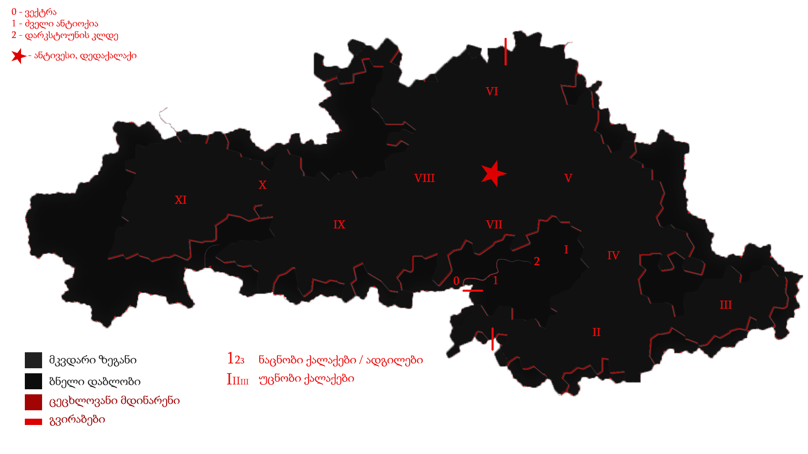
სტალმეერის ძველი იმპერიული რუკა

სესიების მიმოხილვა
სესია 1 (კვირა, 9 იანვარი, 2022) — ადონის სურვილი I

Figure 2: უმბრა, პირველი ექსპედიციისას
ლაგიის სამეფოს მონარქმა, პლუტარქე ადონმა გადაწყვიტა უმბრაში რიგით მერვე ექსპედიციის წარმართვა, თავდაპირველად მხოლოდ საკუთარი მეოხებით, მაგრამ მისი მაგიური თვალი კრანდორის უზურპატორმა, გიჟმა ალბერტმა „დაითრია“. პლუტარქეს ენერგია იცლება ამ თვალის შენარჩუნებისას და ამიტომ ესაჭიროება თავგადასავლის მაძიებელთა რაზმი, რომ თვალი დაიხსნან და მას უმბრაში გაჰყვნენ, როგორც დამცველები.
სამორინე “მიდასის ხელისკენ” გზაში გერალდის გაქურდვა სცადა ერთ-ერთმა სალახანამ, შედეგად დაიწყო ჩხუბი, რომელსაც შეუერთნენ ულფგარი, ქარონი, ნორვემირი, ელიოზი და, თუნდაც ნების საწინააღმდეგოდ, მაგრამ ვორასიც.
საბოლოო ჯამში, ნაჩხუბარი ჯგუფი მივიდა სამორინეში, სადაც დახვდათ ვინმე ადმინისტრატორი გილბერტი. მალევე სცენაზე გამოვიდა ადონის ილუზიური აჩრდილი და მძლავრი პერფორმანსით ჩამოაყალიბა მისია და ბოლოს ისიც თქვა, რომ ჯილდო არის ას ორმოცდაათი ათასი ოქროს მონეტა.
ნორვემირმა შეიგრძნო სამორინეს სიკეთენი და რაც კი რამე ფული გააჩნდა, წააგო.
გილბერტის თქმით, გემით მგზავრობისას პირველი გაჩერება იქნებოდა კრანდორი, შემდეგ ალფათაუნი, ვექტრას ციხე და ბოლოს - უმბრა. შერჩეული გემის, სახელად “მკვლელი”, კაპიტანია ვინმე სისსე, რომელიც თითქოსდა პირატის პაროდიას ასრულებს.
ზღვაში ყოფნისას “მკვლელი” აღმოაჩინა მაირეჰაიმის იმპერიულმა გალეონმა, კაპიტან დეფოლტეს მეთაურობით. გემები ერთმანეთს მიუახლოვდნენ და დეფოლტემ “მკვლელზე” ფეხი შედგა, რათა დაეკითხა პირატები, რასაც სიტყვიერი შელაპარაკება მოჰყვა. ვითარება დაიძაბა, დეფოლტე ყელში ეცა ნორვემირს და მისი განზე გადაგდება მოინდომა. ამით დაიწყო საზღვაო ბრძოლა ორ გემს შორის საზარბაზნე ბადროების გაცვლით. ქარონმა “მკვლელის” სარდაფს თავი უმალვე შეაფარა და შავი კუპრის გამოყენებით ნაპრალები შეაკეთა. საბოლოო ჯამში, სანამ დეფოლტე ელიოზს საბოლოო დარტყმით აკუწავდა, ნორვემირმა იგი ხელთ აიტაცა და ზღვაში მოისროლა. იმპერიულმა გემმა ამის შემდეგ უკან დაიხია.
ექსპედიტორებმა და სისსემ ღუზა კრანდორის მილეწილ პორტში ჩააგდეს, სადაც ყველაფერი, რაც კი შეიძლება ცოცხალი იყოს, მკდარია. ქარონმა, როგორც კი ამის საშუალება მიეცა, მინრას აკადემიაში წერილი გააგზავნა, ვინაიდან მისი ექსპედიტორად წასვლა არ იყო გეგმის ნაწილი. გილბერტის ინფორმაციით, გიჟი ალბერტი ელის მუსიკოსთა ჯგუფს სახელად “უმბრა მალუმ”, და მათი როლის შესრულება ექსპედიტორებს ევალებათ.

სესია 2 (კვირა, 23 იანვარი, 2022) — ადონის სურვილი II

Figure 3: გიჟი ალბერტის სასახლის დარბაზი მუსიკალური ნომრის დროს.
გიჟი ალბერტის სასახლეში ელიოსის არაჩვეულებრივი პერფორმანსი გაიმართა. მან მოხიბლა მერაბი თავისი ოსტატური დაკვრით. ეს დიდი ხანი არ გაგრძელდა, რადგან ნორვემირმა დაიწყო არითმული ტაშის დაკვრა, რამაც ალბერტი ძალზედ გააღიზიანა. მან გააჩერა პერფორმანსი და მოითხოვა მუსიკის რითმის დამრღვევის გამოცხადება. ელიოსმა დაარწმუნა ალბერტი, რომ რითმის დამრღვევი მისი ერთერთი უსულო აბჯრის დასაკიდი იყო, რაც გიჟმა ალბერტმა დაიჯერა და დაიწყო მისი ლანძღვა-გინება.
ნორვემირმა დაამწყვდია გიჟი ალბერტი თავის ხელებში. მისი განთავისუფლების ყოველი მცდელობა წარუმატებელი დარჩა. ულფგარი ავიდა ალბერტის ტახტზე, მაგრამ მალევე მოუწია ჩამოხტომა, რადგან გერალდმა მის ზევით არსებული ბალკონის სვეტი დაანგრია. ოთახს გველები დაესხნენ. ულფგარი და ელიოსი გველების შეტევისგან დაეცენ. გერალდი ტახტის მხარეს გაჩენილი ყინულის კედლის იქეთ აღმოჩნდა, რომელიც აშორებდა ბრძოლას. ქარონმა მაგიური ძალით ულფგარის და ელიოსის გარშემო მყოფი გველები დააძინა და უეცრად მის ხელებს ცეცხლი წაეკიდა (რომელიც მასზე არ მოქმედებდა). გერალდმა გაათავისუფლა არკ-მაგუს ადონის თვალი ტახტის მიმდებარე კედლიდან (ეს იყო რის საპოვნელადაც იყვნენ მოგზაურები მოსული).
ნორვემირმა კვლავ დატყვევებულ გიჟ ალბერტს თავი ნავთში ჩააყოფინა, ქარონმა თავისი ცეცხლმოკიდებული ხელით თმებზე ცეცხლი წაუკიდა, ულფგარმა გულში შუბი შეასო და ელიოსმა თავისი მოწამლული ხანჟალი თვალში გლიჯა… ნორვემირმა ალბერტის მკვდარი სული ხელიდან გაუშვა, მაგრამ ალბერტის სული წამიერად დაბრუნდა საბოლოო სვლის გასაკეთებლად. მისი ბოლო სვლა იყო ნორვემირის კუბოში მყოფი არსების გაცოცხლება, რის შედეგადაც ნორვემირის კუბოს ახალი ფრაზა დაემატა, ალბერტი კი ფერფლად იქცა…
ულფგარმა ბრძოლის შემდეგ ცეცხლსაწინააღმდეგო ფარი და ალბერტის შელოცვების წიგნი იპოვა, საიდანაც ისწავლა “Electrified Terrain (proprietary)” შელოცვა. ელიოზს წილად ხვდა „თაგვის წამალი“, რომელიც ნებისმიერ ცოცხალ არსებას უმალვე კლავდა. ქარონს შეხვდა უცნაური ნიღაბი.
ჩვენ ხელში დარჩა ეტლი (ცხენის გარეშე)
სესია 3 (კვირა, 30 იანვარი 2022) — დიადი ქვაბულისკენ

Figure 4: აჩრდილელი დელეგაციის საწევრო აბჯრის ასლი.
მოშორებით, კუნძულ კანდორის სანაპიროზე, გამოჩნდა გემი „მკვლელი“. სისსე თურმე ყველას ელოდებოდა. გემზე იმყოფებოდა ვორასი, რომელიც გიჟი ალბერტის ბრძოლას არ დაესწრო. ფეხი შედგა თუ არა ყველამ, სისსემ ქარონს წერილი გადასცა, მან კი ყველასგან მოშორებულ ადგილას შეაფარა თავი, თვალი გადაავლო ნაწერს და აღელვებული დაბრუნდა. ამის მერე სისსემ გამართა მონოლოგი, სადაც ახსნა რომ იგი იყო პირატთა ლიგის მე-14 ნაოსანი. განმარტა, რომ მე-14 არა წარმომავლობით, არამედ რანკით. გაფრთხილებითა თუ მუქარით, ყველას აუწყა, ტყუილად არ დამნიშნეს თქვენს კაპიტნადო და, პირდაპირი მნიშვნელობით, წითელი კლანჭები აჩვენა.
„მკველმა“ გეზი აიღო ალფათაუნისკენ. პლუტარქეს თქმით, იქაურობა არ ემორჩილებოდა იმპერიას და, შესაბამისად, შესვლა ადვილი იყო. პორტში დარაჯად იდგა ერთი რკინის აბჯრიანი კაცი, რომელმაც ყველას პასპორტები მოთხოვა. გამოლაპარაკება სცადეს, მაგრამ აშკარა იყო, რომ მას მხოლოდ სიტყვა „პასპორტი“ ესმოდა. სისსემ რაღაცა ჩაჩურჩულა და ყველა გაუშვა.
ალფათაუნი აღმოჩნდა მეამბოხეთა დიდი ცენტრი. ქალაქში ყველამ იცოდა გმირების შესახებ, მით უმეტეს რომ მათი სახეები გამოკრული იყო ქალაქის ცენტრში მდგარ ძებნილთა სიაზე. გარშემო ბევრი წითელი იყო.
პლუტარქემ განაცხადა, ამ ექსპედიციისთვის განსაკუთრებული ხალხი გვჭირდებაო და უბრძანა ცენტრალური ტავერნისკენ დაძრულიყვნენ. შენობა ერთი შეხედვით ჩვეულებრივი იყო, მაგრამ კარი ჰქონდა ∇-ს ფორმის. ტავერნაში შესვლისას გამოვიდა კაცი სახელად შტანგა მაიკი, რომელიც 45 ოქროს დაპირდა მას, ვინც ხელს გადაუწევდა. მის გარდა, იქ შესულებს შეხვდათ ამ ტავერნის მეპატრონე არჯიტი, რომელიც სწორედ ის „განსაკუთრებული უნარების მქონე პიროვნება“ აღმოჩნდა. ყველამ კარგი დრო ატარა. ვორასმა ხელის გადაწევის საოცარი უნარი გამოავლინა, რამაც მაიკი მცირედით დააეჭვა, მაგრამ დიდად ყურადღება არ მიუქცევია. ელიოზმა თავისი ახლად ნაპოვნი შხამის გამოყენება გადაწყვიტა: ღვინოში ჩაასხა და საუბარი გაუბა ერთ-ერთ იქ მყოფს. სხვები მალევე მივარდნენ და მოწამლული ჭიქა ხელიდან გამოგლიჯეს.
ლხენისა და დროსტარების შემდეგ, არჯიტმა ყველა თავისკენ მიიწვია. წიგნის თაროს უკან საიდუმლო კარით სარდაფში ჩაიყვანა, რომელიც ამავე დროს მისი საამქროც იყო. ყველამ დაიწყო უმბრასკენ სვლაზე ლაპარაკი, მაგრამ უცბად შემოიჭრა ადამიანი, რომელიც თავიდან ფეხებამდე შავით იყო მოსილი. ნორვემირთან მივიდა და რაღაცაზე გაუწყრა. აშკარა იყო, რომ იგი ნორვემირის გულისთვის იყო მოსული, მაგრამ თვითონ ბარბაროსი ამაზე არ იყო თანახმა. გამოლაპარაკების შემდეგ, მამაკაცი მიუტრიალდა დანარჩენ ხალხს და კითხა, რამე ხომ არ გინდათო. ყველამ იყიდა სხვადასხვა გამოსადეგი ნივთი მომავალი ექსპედიციისთვის. ამის მერე, ადონმა და არჯიტმა ყველას აუხსნეს სიტუაცია:
- უმბრა არის ნეიტრალური, დაუსახლებელი ტერიტორია;
- უმბრა მდებარეობს ქვაბულში;
- უმბრას შემომსაზღვრელი “დიადი ქვაბული” მხოლოდ ორგანაა გახვრეტილი — ომეგას ციხესა და ვექტრას ციხეში;
- დადის ხმები, რომ გველ-მაქციის დაავადება უმბრადან გამომდინარეობს;
- ერთ-ერთი ორგანიზაცია — უბისას ორდენი — რამდენიმე საათში შეუტევს ომეგას ციხეს, რათა სამუდამოდ აღკვეთოს ომეგასა და ვექტრას გვირაბების გამოყენება;
საუბრის შემდეგ, ყველა კანდორზე ნაშოვნი ეტლით ჩრდილოეთისკენ გაემართა. შემოღამებისას გზიდან მოესმათ აბჯრის ჩხრიალის ხმა. ამის მერე დაინახეს გზაზე მდგომი მეომარი, რომელსაც ნაცნობი აბჯარი ეცვა. მიუახლოვდნენ რა, იგი გაეცნო მათ, როგორც „00“. აბჯარზე აჩრდილეთის ემბლემა, თეთრი რვაკუთხედი, ჰქონდა დატანილი. ყველა გააფრთხილა, რომ უმბრასკენ ახლა დიდი ძალები მიიწევენ.
ცოტა ხნის მერე კარეტას გზაში შემოხვდა მაირენჰაიმის იმპერიის ექვსი დარაჯი. მათ ერთი შეხედვით ალყა შემოარტყეს კარეტას რომ დაპატიმრების ბრძანება გამოეცხადებინათ, მაგრამ მალევე გაუჩინარდნენ. დაბნეულმა გმირებმა წინ ნაბიჯი გადადგეს თუ არა, მიხვდნენ, რომ დარაჯები უბრალოდ უჩინრად ქცეულან. ბრძოლისთვის მოუმზადებლებს მოუწიათ უზარმაზარი დარტყმის მიღება: უხილავი მაგიკოსები კარეტის გარშემო შემოიკრიბნენ და გაახურეს, თითქოს შიგნიდან უნდა ამოეწვათ ყველა იქ მჯდომი. ამასთან ერთად, მეომრები კარეტის ფანჯრებს გარეთ დადგნენ რომ იქიდან გადმომხტარისთვის პირდაპირ ეძგირათ ხმალი. მძიმე ბრძოლა გაიმართა. ელიოზი, ულფგარი და არჯიტი კინაღამ იმქვეყნად წაბრძანდნენ.
საბოლოოდ ეს შეხლა-შემოხლა გმირებისთვის გამარჯვების მომტანი აღმოჩნდა. ერთ-ერთი დარაჯი ცოცხალი დატოვეს და „სიმართლის ზონის“ საშუალებით გამოკითხეს ყველაფერი, რაც იცოდა. მის მიერ მოწოდებული ინფორმაცია დიდწილად დაემთხვა ადრე გაგონილს, მაგრამ იყო ერთი სიახლე: თურმე უბისას ორდენს ხელთ ჰქონდა ე.წ ეტიენი ანუ ტიტანი, რომლის გამოყენებას ომეგას ციხის აღებისთვის აპირებდა.
სესია 4 (კვირა, 27 თებერვალი, 2022) — სექტორი A

Figure 5: უსახო მრჩეველი ფაბიო
ექსპედიტორებმა ოვერტონ დარბი დაამარცხეს და შორიახლოს ბანაკი გაშალეს. ნორვემირმა საკუთარი თვალით იხილა, თუ როგორ წავიდნენ ვორასი და ქარონი ტყის მიმართულებით, მაგრამ გადაწყვიტა, ისინი არ შეეჩერებინა.
ვექტრასკენ გზაში ელიოზმა გაიხსენა, რომ დიად ქვაბულში არამხოლოდ ვექტრას და ომეგას გვირაბებია გაყვანილი, არამედ არსებობს კიდევ ერთი, ახალი გვირაბი ნახშირის უნიონის ტერიტორიაზე. ამბობენ, რომ დაახლოებით 2 თვის წინ ნახშირის უნიონის ცენტრალური კომიტეტის მდივანმა, ულფრიდ კოლბერგმა მოიწვია გამორჩეულ მაღაროელთა რაზმი და მათ დაავალა დიად ქვაბულთან ახლოს მდებარე მაღაროში ახლებური წარმოშობის “გრანიტის” მოპოვება. ამ რაზმმა, სახელად ლ.ე.დ.ა. (ლითონთა ექსკავაციის დორფული ასოციაცია), გეგმას არასანქცირებულად გადაუხვია და დიად ქვაბულში მესამე გვირაბი გაიყვანა, შემდეგ უმბრას ტერიტორიაში გაიფანტა.
ელიოზმა ასევე გაიხსენა, რომ მიწათ განრიდების შემდეგ აჩრდილეთის ტერიტორიაზე დავარდა უზარმაზარი ყინულოვანი წარმონაქმნი. ამბობენ, რომ მისი მეშვეობით იქაური ელემენტალები თავისუფლად ხვდებიან უმბრას ტერიტორიაზე. ადონი, ისევე როგორც სხვა მრავალი, ეჭვობს, რომ აჩრდილელი ელემენტალები დორფებთან ერთად უმბრას უღმერთო მიწაზე შავბნელ საქმეებს ჩარხავენ. ამასობაში, მაირეჰაიმის იმპერია და გრაკლიანის პაქტი ებრძვიან უმძლავრეს და უცნობ დაავადებას - გველადქმნას.
ვექტრასთან ახლოს, გზაჯვარედინზე, ექსპედიტორებს ჩაუარა ვეფხვისთავიანმა, მწვანეებში ჩაცმულმა არსებამ. ექსპედიტორებს მისალმებაზე ამ ქმნილებამ პატარა იისფერი ბურთის სროლით უპასუხა. ელიოზმა პირველმა დაითრია ეს ბურთი, ის მაშინვე აფეთქდა და ელიოზი სულ იისფრად შეღება. აღმოჩნდა, რომ ეს არის უძილობის წყევლა. ადონმა წყევლის განქარვების მცოდნე მხოლოდ ერთი ადამიანი გაიხსენა ვექტრას მიდამოებში - უსახო მაგიკოსი. ექსპედიტორებმა უსახო მაგიკოსის “მოთამაშეთა გროტო” მოინახულეს, ის უკნიდან თავში დარტყმით ჩათიშეს და გაქურდეს, საჭირო გრაგნილიც მოიპოვეს.
ვექტრას ციტადელი დასახლებულია ტაძრების დამცველთა ორდენით, სახელად სექტორი A. ვექტრაზე ასულ ექსპედიტორებს, გასაკვირველად, დახვდა ამ ორდენის მხოლოდ ერთი წევრი - ძმა პატრიკი, მას უნდა გაეღო “უკანასკნელი ჭიშკარი”, რომელიც “უკანასკნელი გვირაბის” ბოლოში მდებარეობს და უმბრას პირდაპირ ებჯინება, მაგრამ მოხდა მოულოდნელი - ძმა პატრიკი დაშლის წყევლით შეაჩვენა არქმაგუს კასიუსმა, რომელიც ჩუმად, ექსპედიტორთა ყურადღების მიპყრობის გარეშე, “უკანასკნელ გვირაბში” შემოპარულა. კასიუსმა ექსპედიტორები გვირაბიდან ვექტრას ციტადელის ეზოში გამოიტყუა, სადაც მათ დახვდათ უბისას ორდენი სრული შემადგენლობით - 7 მაგუსი, ეტიენი და თავად კასიუსი. მაგუსებმა მალევე გამოიყენეს ყინულის კონა, შემდეგ ცეცხლოვანი ბირთვი და გერალდი, რომელსაც სულ რაღაც 5 წამის ამოღებული ჰქონდა თავისი ცეცხლოვანი ხმალი, მიაწვინეს. კასიუსი ელიოზის ღრმად აღვერახსნილ, ყურის გამაბრუებელ სიმღერას შეუშინდა და ვექტრას გალავანზე მიიმალა. ეტიენმა მხოლოდ ერთი რამ იცოდა, და კარგადაც გამოსდიოდა - ხელების ტყაპანი მიწაზედ, მცირე ძვრების გამოწვევითაც კი. ეტიენმა ელიოზი ლურსმანივით ჩააჭედა მიწაში, მაგრამ ულფგარმა თავისი ოქროს ხელით თანამოძმე იხსნა და მანაც განაახლა მგოსნის საქმიანობა - ნორვემირს გადასცა შთაგონებანი. არჯიტმა ეულად დაყუდებული კასიუსი ციხის გალავანზე იხილა, დრო იხელთა და ის მიზანში ამოიყვანა. კასიუსმა ხელშეუხებლობის სფერო ცუდ დროს გააქტიურა - არჯიტიც მასში მოხვდა, და მანაც არ დააყოვნა, არქმაგუსს უტარა მახვილები და სფეროდან, გალავნიდანაც ჩააგდო უკან ეზოში. ამასობაში ეტიენმა კვლავ ლურსმანივით ჩააჭედა ელიოზი მიწაში, ხოლო სხვა მაგუსებმა ულფგარი მიაწვინეს. ეზოში მხოლოდღა ნორვემირი იბრძოდა, მის წინააღმდეგ მაგუსებმა ძალები დალიეს და დიდი ვერაფერი დააკლეს. საწყალი გერალდის დამწვარი ნეშტის შველა აზრს იყო მოკლებული ისევე, როგორც ელიოზის გაჭყლეტილი, დასახიჩრებული სხეულისა. ულფგარი ჯერაც სუნთქავდა, მისი გაყინული გონება ბოლო უჯრედებით საზრდოობდა. ნორვემირმა გადაწყვიტა, რომ ეტიენის, 2 მაგუსისა და მათი ოსტატის წინააღმდეგ ის და არჯიტი ვერას გახდებოდნენ, ამიტომ გაქცევის დრო იყო, ოღონდ უმბრაში!
უგონო ულფგარით ცალ მხარზე და მეორეზე - არჯიტით, ნორვემირი “უკანასკნელი გვირაბისკენ” ფეხის კუნთების სრული ამუშავებით დაიძრა. ეს უმალვე დაინახა კასიუსმა და საკუთარი თავი, ისევე როგორც დარჩენილი ორი მაგუსი, ნორვემირის პირისპირ გაჩითა, ზედ გვირაბისკენ მიმავალ კარზე. ეტიენმაც საკუთარი ოსტატისკენ იწყო ნელი სვლა. ნორვემირმა იგრძნო, რომ ულფგარის გული აღარ ცემდა. ის უჩუმრად გაპარულა. ნორვემირმა მთელი სიმწრითა და ბრაზით დაიბღავლა, ყურის წამღები სიმძლავრით, მერე ორივე ხელი კასიუსს დაავლო და ის კედელზე მიანარცხა. არჯიტთან ერთად ნორვემირი “უკანასკნელ გვირაბში” ჩავიდა და მის ზურგზე მიჯაჭვული კუბო ახმაურდა, ის შაშხანებდა და ტკაცუნობდა… ისმოდა კასიუსისა და მისიანების განწირული ყვირილები - “არ გააღოთ! გთხოვთ! გემუდარებით!”
ნორვემირმა “უკანასკნელი ჭიშკრის” საწევი ჩამოწია. დამაყრუებელ სიჩუმეს მძლავრი ქარი მოჰყვა და გვირაბის ბოლოში მძიმე ჭიშკარი გვერდზე შეიწია. დასისხლიანებული ნორვემირი და თავზარდაცემული არჯიტი უმბრაზე გავიდნენ. მათ იხილეს, თუ როგორ გაანადგურა კასიუსმა საკუთარი მაგიური შესაძლებლობები, რათა “უკანასკნელი ჭიშკარი” დაეკეტა - მან ეს მოახერხა.
სესია 5 (კვირა, 6 მარტი, 2022) — უმბრა I

Figure 6: ძველი ანტიოქიის იმპერიული არქიტექტურა
ნორვემირი და არჯიტი მოხვდნენ უმბრაში. გატრუნულნი შეჰყურებდნენ ისინი ცას შავს, თავდაპირველად კუპრივით შავს და შემდგომ მუქ ლურჯს, როცა თვალი მიეჩვია და იხილა ათასობით ვარსკვლავი. ორთავეს ახსოვდა, რომ წუთების წინ, დიადი ქვაბულის გადაღმა, მზიანი დღე იყო. ასე უცებ რად დაღამდა, არავინ იცოდა. თოვლს მოწითალო ფერი მიუღია, ის მთვარის შუქს ირეკლავდა. გადარჩენილი ექსპედიტორების თვალწინ თვალუწვდენელი ველი გადაშლილიყო და შეპყრობილი იყო ის ზებუნებრივი მდუმარებით.
ადონი აღარ იღიმოდა, ნორვემირისა და არჯიტის სასოწარკვეთას მისი შეუპოვარი, დადებითი გუნებაც დაუჩაგრია. მიუხედავად ამისა, ადონმა გეზი ძველი ანტიოქიისკენ, უმბრას უახლოესი სამხრეთული ქალაქისკენ დასახა. ადონის თქმით, მიწათ განრიდებამდე რამდენიმე წუთით ადრე მან პირში რკინის გემო იგრძნო, თითქოსდა თავისივე სისხლი გადაეყლაპა, და ეს ნიშნავდა მხოლოდ ერთ რამეს - ალქიმია. ლეგენდარული ალქიმიკოსი, სტალმორი, სწორედ ძველ ანტიოქიაში იმალებოდა, სანამ აჩრდილეთში გაიხიზნებოდა. ადონს ჰქონდა იმედი, რომ აქ იპოვიდა მის ნაშრომებს, რომელიც დაეხმარებოდა უმბრას იდუმალებაზე პასუხის მოძებნაში.
ექსპედიტორებმა სვლა ინერტულად მდინარე გველის მარჯვენა სანაპიროს გასწვრივ განაგრძეს. ადონი შეჩერდა, მან ვიღაცის ან რაღაცის მოახლება იგრძნო და მძლავრი ნათება გამოჰყო, გამოავლინა ჰაეროვანი ქმნილება. თავდაპირველად, უცნობი ორჭოფობდა, ექსპედიტორებს არ ეცნობოდა, მაგრამ მერე გონს მოეგო და განაცხადა, ჩებურეკი მქვიაო და უკვე 40 წელია, რაც უმბრაში ვარო. არჯიტს ჩებურეკისნაირი ელემენტალები იქამდეც ენახა, აჩრდილეთში. უცნობმა ექსპედიტორებთან ყოფნა დაიჩემა და მათაც ის, მართალია, ეჭვის თვალით, მაგრამ მიიღეს.
არჯიტს დააინტერესა, თუ ვინ იყვნენ მეშვიდე ექსპედიციის (1361) წევრები, და ადონმაც არ დააყოვნა:
- ლუდვიგ რაისი (fighter)
- ემერიკ უარდი (barbarian)
- მუჰამედ (ranger)
- მისტერ ჯონსი (fighter)
- ტომ კენტი (ranger)
- ჟან-პიერ მანუჩარი
ჩებურეკმა თქვა, რომ უმბრას მიწებზე ამ ადამიანებს იცნობენ. მისი ინფორმაციით, ყველა წევრი გველადქმნამ დაძლია, გარდა ჟან-პიერ მანუჩარისა, რატომღაც. ეს უკანასკნელი დანარჩენებს ადრევე განერიდა. მუჰამედი და ლუდვიგ რაისი დედაქალაქ ანტივესისკენ დაიძრნენ, ხოლო სხვები უგზო-უკვლოდ დაიკარგნენ.
წინ მავალი ექსპედიტორების ყურადღება წამიერად მიიპყრო ოქროსფერმა ნაპერწკალმა, რომელიც მალევე აფეთქდა. განზე გავარდნილ ნორვემირს, არჯიტსა და ჩებურეკს მოევლინა მიწაზე დაგდებული დორფი. ის კარგად იყო ჩაცმული, თუმცა სახეზე დასტყობოდა რაღაცნაირი “ვითომ გაკვირვება”. ადონმა მალევე აცნობა თანაგუნდელებს, რომ ამ დორფმა არ წამს “ანომალიური ტელეპორტი” აღასრულა. ადონმა ასევე გაამხილა, რომ უმბრა მოცულია “საყოველთაო ჯადოთი”, რომლის სრულ კონტროლში აყვანა მხოლოდ უმაღლესი წოდების ჯადოქრებს შეუძლიათ, მაგრამ არასრულ კონტროლში - უკლებლივ ყველას. ამ სახის ტელეპორტს ასევე “ლიმინურ ტელეპორტს” უწოდებენ. ის არ არის სტაბილური, და არის იმის საშიშროებაც, რომ შემლოცველი ტელეპორტაციისას გაიხლიჩოს. ფაქტია, ამ დორფს ეს რისკი რაღაცად უღირდა, და ეს ასეც აღმოჩნდა, ვინაიდან ის ექსპედიტორებს გაეცნო, როგორც ცხონებული ულფგარის ძმა, რურიკ ბრატისტა. განაცხადა დორფმა, დავალება და მოწოდება, რომელიც ულფგარმა ვერ დაასრულა, მან უნდა დაასრულოს, როგორც ბრატისტების კლანის სრულფასოვანმა წარმომადგენელმა. მიუხედევად იმისა, რომ ექსპედიტორებს ეუცნაურათ ის თვალი, რომლითაც რურიკი დაჰყურებდა ცხონებული ძმის მოოქროვილ ნივთებს, მათ იგი მიიღეს, როგორც დამატებითი ექსპედიტორი ისევე, როგორც ჩებურეკი.
ზემოხსენებულის რკვევაში გართულებს მოესმათ თოვლის ფეხქვეშ გათელვის ყუყუნი, ყრიალი. სამხრეთიდან ვორასი მოსულიყო. ექსპედიტორებმა გერალდის, ელიოზისა და ულფგარის სიკვდილი ახალმოსულსა და ქარონს მალევე დააბრალეს. ქარონი კვლავ არსად ჩანდა და ვორასის თქმით, ის ექსპედიციას საბოლოოდ განერიდა და ვინმე გილბერტის სანახავად წასულიყო. ადონმა ქარონი დეზერტირად გამოაცხადა და დაიფიცა, რომ ანანებდა ამ გადაწყვეტილებას. ვორასი ექსპედიტორებმა შუა უმბრაში რატომღაც არ მიატოვეს.
არჯიტის ყურადღება შემაღლებულ ბორცვზე დადგმულმა მოცისფრო ქანდაკებამ მიიპრყრო. მასთან მოახლოებისას არჯიტის გონებამ სხეული დატოვა. მის თვალწინ წარსდგა სცენა: ნორვემირი იწვა “საოპერაციო ქვის მაგიდაზე” და მას თავზე დასტრიალებნენ “მეცნიერები თუ ექიმები”. არჯიტის თვალწინ კადრი გადაირთო და მან იხილა მდიდრულად ჩაცმული ადამიანი, რომელიც ცოცხლად იწვოდა. ნორვემირიც მიუახლოვდა ქანდაკებას, როცა თავზარდაცემული არჯიტი იხილა. ის ყინულოვანი მეომრის ფორმისა იყო, ოღონდ ხმლის გამოკლებით. ქანდაკების ფსიქიკურმა ძალამ ნორვემირიც შეიპყრო, მან დაინახა ვიღაც ახალგაზრდა, არისტოკრატული ჩაცმულობის ადამიანი, რომელიც მას ანჯღრევდა, აფხიზლებდა. მალევე ნორვემირმა ამ ადამიანის წასვლა იხილა. ამ დროს ნორვემირის კუბოზე ოქრისფერი ჩუქურთმებით ამოიტვიფრა აბისალური წარწერა: Я бы умер, но я не могу.
ძველი ანტიოქია დაქცეული იყო. სქელი ფოლადის ჭიშკარი რაღაცას შეუქანავებია და დაუნჯღრევია. ქალაქი თითქმის მთლიანად მოსვრილი იყო წითლად, უმეტესად სითხით, რომელიც თავისი სიბლანტით შედედებულ სისხლს წააგავდა, ის ესხა ბილიკებსა თუ ფართო ცენტრალურ გზებზე, შენობებსა და მათ ფანჯრებზე. წითელი ფერის სიჭარბე იმდენად დიადი იყო, რომ მისი ფერმენტი მუქ ლურჯ ცაზეც გადასულიყო, და მასაც ალისფერი ელფერი ჰქონდა. ძველი ანტიოქიის ხედი იყო ის, რასაც ნებისმიერი ჭკუათმყოფელი ჯოჯოხეთს შეადარებდა - თოვლი, სისხლი და ღამე. ადონის თქმით, ის გველისებრი ადამიანები, რომლებიც კანტიკუნტად დაიარებოდნენ ძველი ანტიოქიის დალეწილ ქუჩებში, ჰამიდელებად იწოდებიან. ზოგადად, ჰამიდი არის ჩვეულებრივი გველი, ხოლო ნახევრად ჰამიდელი არის ის ადამიანი, რომელიც გველადქმნითაა დაავადებული.

Figure 7: ძველი ანტიოქიის გეგმა
ექსპედიტორებმა უჩუმრად დაიარეს ქალაქის დასავლეთ უბანი, გველთა კილომეტრი, რათა ეპოვათ სტალმორთან დაკავშირებული რაიმე შენობა, შემდეგ მიადგნენ ქალაქის სამხრეთ ნაწილს, მწიგნობართ უბანს, სადაც არჯიტის დახმარებით გაკოჭეს ერთ-ერთი ნახევრად ჰამიდელი და წაართვეს ერთი აგურით მოპირკეთებული შენობის გასაღები. ამ შენობის აგურებს შორის არსებულ ღარებში ექსპედიტორებმა აღმოაჩინეს ფეთქებადი მაზუთი.
ამასობაში, ჩებურეკი ქალაქის ჩრდილოეთისკენ წასულიყო, გორას უბანში, სადაც ის ერთმა დაავადებულმა ქალმა სახლში შემოიპატიჟა, ვინაიდან ვინმე “ფრედერიკად” აღიქვა. საბოლოო ჯამში, ქალმა დაცვას დაუძაღა, რამეთუ ჩებურეკის უხერხულობა ლეტალურ დონეს აღწევდა. ჩებურეკმა ამ ქალის სახლიდან ერთი წამალი წარიტაცა და ექსპედიტორებს შეუერთდა.
აგურის შენობა ბიბლიოთეკა ყოფილა. იქ ექსპედიტორებმა იპოვეს ოთახი, რომელიც სტალმორის კაბინეტად მიიჩნიეს. ამ ოთახის ბოლოში მდებარე მაგიდის უჯრებში ფათურობდა ერთი ნახევრად ჰამიდელი. უცნაური, მანათობელი ობიექტით ხელში, ჰამიდელმა ფანჯრიდან გადახტომა მოინდომა, მაგრამ ის ნორვემირმა შებოჭა. ექსპედიტორებმა გაიგონეს ხმა “FORTIFY”, და მათ უკან კაბინეტის კარი ჩაიკეტა, თანაც გამოჩნდა კიდევ სამი ჰამიდელი. მათ სხვადასხვა მოოქროვილი-მომწვანო იარაღი ეჭირათ. ოთახში ასევე საიდანღაც აღწევდა ნიავი. როგორც აღმოჩნდა, ეს ნიავი სტალმორის ნაშრომთა ნაფიცი დამცველი, ფრედერიკ მალდინი იყო, უჩინარ, აირად ფორმაში.
ექსპედიტორებმა შეძლეს საკმაოდ მძლავრი ჰამიდელებისა და ფრედერიკის განადგურება. ყველა საბოლოო დარტყმა, სხვათაშორის, ნორვემირმა მიიტანა, მაგრამ ექსპედიტორთა გუნდურობას ბადალი არ ჰყავდა. როგორც კი მოიცალეს, ექსპედიტორებმა გამოიკვლიეს მოელვარე ობიექტი, რომლის მოპარვაც იმ ერთ ჰამიდელს სურდა. მათ იგი გახსნეს და ხელში შერჩათ წიგნიდან ამოგლეჯილი ერთი დაკუჭული გვერდი:
თავი პირველი
დასასრული
გარდა პირადი მამოძრავებელი მექანიზმებისა, განვითარებას, ადამიანის მისწრაფებას, გაანადგუროს საკუთარი თავი, ჯოჯოხეთის ალში გადნეს, ვერ შეაჩერებს ვერც ღვთის შიში და ვერც მეფისა თუ იმპერატორის. მე ვარ არა “ვინც”, არამედ “რაც” წინ გაუძღვება ჩვენს ნელ, ცეკვა-ცეკვით ჩასვლას ჯოჯოხეთის კიბეზე. დიახ, ადამიანის სხეულში ჩასაფრებული ეშმაკი - ეს ვარ მე, სტალმორ. ჩემი ცნობიერება, ვაღიარებ თუ ვტრაბახობ, არის შეპყრობილი რაღაც უცნობის მიერ და მე მომდის აზრები, ოჰ, ეს აზრები მხრავენ მე.
მე გავაორმაგე ადამიანი. მე გავაცოცხლე ადამიანი. მე გავაღვიძე მკვდარი. მე დავაბრუნე არსების ნამდვილი არსი. მე დავარღვიე კანონზიმიერება. მე გავაღე ის კარი, რომლის გადაღმაც დავინახე დასასრული. და ჩემთან ერთად დაეცემით ყველა, ყველა რასა, ჩემთან ერთად ეზიარებით დასასრულს, რომელსაც მე თუ არა სხვა მოგავლენდათ. მჯერა, რომ ეს დასასრული უნდა მოხდეს, ვინაიდან ის ხდება. თუ ჩემი ხელი გაიწევს ჯოჯოხეთის კარიბჭეზე, დაე, მაშ ეს ასეც უნდა იყოს.
ადონის თქმით, ეს თავი სტალმორის ბოლო წიგნის, 1299 წლის “მეცამეტე”-დან არის. ის არ გამოსცეს, ამიტომაც იშოვება მხოლოდ დედანში, და აქ სტალმორმა გაამხილა, თუ რას მოიცავდა მისი ექსპერიმენტები.
აგურით მოშენებულ ბიბლიოთეკაში ექსპედიტორებმა იპოვეს:
- Wand of war mages
- Staff of Withering
- Alastor
- Artifice Sword
- Rod of Absorption
- 5 potions of greater healing
- 5 Adamantine bars
სესია 6 (კვირა, 20 მარტი, 2022) — უმბრა II, მანდარინის ინსტიტუტი
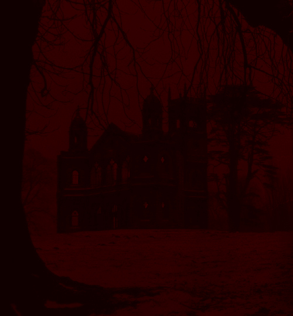
Figure 8: მანდარინის ინსტიტუტი
ქარონის „პირდაპირი ტრანსლაცია“
ძველ ანტიოქიაში მდებარე ექსპედიტორებმა შეამჩნიეს, რომ ადონს ამჯერად მსუქანი ბავშვის ფორმა ჰქონდა მიღებული. ამ უკანასკნელმა კი განაცხადა, რომ შემდეგი დანიშნულების წერტილი იყო მანდარინის ინსტიტუტი: ფარმაკოლოგიური ცენტრი, რომლის მეთაური ადრე სტალმორი ყოფილა. თვით ადონიც მისი მნიშვნელოვანი ნაწილი გახლდათ. ამის მერე კი ნიშნისმოგებით იკითხა:
„გახსოვთ ქარონი?“
ქარონ მორტიმერს, ვექტრასკენ მიმავალ გზაზე რომ გაუჩინარდა, ვიზარდჰელმი ეძებდაო, დასძინა. მოღალატეებს აი ასე ვუმკლავდებითო. შემდგომ კი ექსპედიტორებს წარუდგინა „ქარონის დასჯის პირდაპირი ტრანსლაცია“ — ილუზიური გამოსახულება, სადაც გმირებმა იხილეს შემდეგი:
დიდ დარბაზში, გრძელ მაგიდასთან, იდგა ქარონი. მის მოპირდაპირე მხარეს — შავი აბჯრით მოსილი რაინდი. ამ უკანასკნელის სახე ნორვემირმა იცნო: გილბერტი, რომელიც მას და პირველად გამგზავრებულ ექსპედიტორებს „მიდასის ხელში“ შეეგება, ქარონის დასასჯელად ყოფილა გაგზავნილი. უიმედო მდგომარეობაში ჩავარდნილ გრძნეულს სხვა გზა არ ჰქონდა, გარდა იმისა, რომ შეგებებოდა მისკენ მიმავალ გილბერტს. თავიდან თითქოს იყო გაძრომის შესაძლებლობა, მაგრამ ქარონი მაინც ბრძოლის მორევში აღმოჩნდა ჩათრეული. Disintegrate-ის აცილების შემდეგ მან სცადა მთელი სხულით მიჯახებულიყო ფანჯარას და თავი გადაეგდო, მაგრამ არ გამოუვიდა. გასაქცევად ნისლიანი ბიჯით ეზოში გადატელეპორტირდა და რამდენიმე წამის წინ გააქტიურებული შელოცვით სცადა რაც შეიძლება მოშორებულიყო იქაურობას. მისდა საუბედუროდ გილბერტმაც გაიმეორა იგივე ქმედება და გაქცეულს დაეწია ზუსტად იმ მანძილზე, რომ სუსხის კონუსით თავიდან ბოლომდე გაეყინა. ამის მერე კი უზარზარი ცულით დაამსხვრია.
ტრანსლაციის შემდგომ ადონმა კიდევ ერთხელ გაამახვილა ყურადღება იმაზე, რომ ქარონისთვის ეს სასჯელი სათანადო და სამართლიანი იყო.
ვორასის ხაფანგი
ექსპედიტორებმა გადაწყვიტეს, რომ მცირე ხნით მაინც უნდა გაჩერებულიყვნენ ქალაქში: მოემარაგებინათ რესურსები და მოეშუშებინათ ჭრილობები. ყველამ დაიწყო შემზადება დასასვენებლად. ვორასი, გაფითრებული და აკანკალებული, მივიდა ჩებურეკთან, თითი ვიწრო შესახვევისკენ გაიშვირა და უთხრა, შენ გეძახიანო. თავიდან ძალიან იეჭვა ჩებურეკმა, მაგრამ საბოლოოდ მაინც ენდო ვორასს და წინ წავიდა. რამდენიმე ნაბიჯი გადადგა თუ არა, დაგებულმა ხაფანგმა მიწიდან აიტაცა და ჰაერში გამოკიდა. ვორასი მიუახლოვდა და თავგამოდებით დაუწყო ჩეხვა. შეტევებს შორის თვალი მოკრა რაღაც ბლანტ მასას, რომელიც ხმალს ზედ ედებოდა, მაგრამ ყურადღება არ მიუქცევია. ცოტა ხნის მერე, თვალსახვევი მოიხსნა და დაიწყო მეტამორფოზი, ადამიანური იერი გაქრა და მის ადგილას გაჩნდა რაღაც ჰიბრიდი არსება: წელს ზევით ძვირფასი ქვებითა და ლითონის ჩონჩხით შეკრული ნაკეთობა, წელს ქვევით კი უზარმაზარი ობობის ქვედა ტანითა და რვა ფეხით.
სიკვდილის პირას იყო უკვე მისული ჩებურეკი, როცა თითქოს თავის გადარჩენის მიზნით ლევიტაცია შეულოცა მისკენ მიმავალს. უკნიდან ნორვემირი გამოჩნდა და აწ უკვე ობობა-რობოტის კენტავრი, 20 ფუტით ჰაერში გამოკიდებული, ხელში აიტაცა. ბარბაროსს უნდოდა, რაც შეიძლება შორს წაეთრია ვორასი, იგი კი, მკლავებში მოქცეული, გამოკიდებული ნანადირევისკენ იწეოდა და თან შემზარავი ხმით კიოდა. ბლანტი სიშავე ნორვემირზეც გადავიდა და მისი ხმლისკენ დაიწყო სვლა. ნორვემირს კენტავრი ხელიდან გაუსხლტა.
შუა ორთაბრძოლის დროს თითქოს არსაიდან გამოსრიალდა ექსპედიტორებისნაირად გველის თავის ნიღბიანი ადამიანი, ორივე ხელში ხანჯლით, და ვორასი მძიმედ დაჭრა. მისი დახმარებით ნორვემირმა შეძლო გაქცეულის უკან მობრუნება და განეიტრალება. გონებაწასულ ვორასს მაინც უთამაშებდა ობობის ფეხები, ბლანტმა მასამ კი იარაღი სრულიად გაუნადგურა.
ფრეასა და მანუჩარის გამოჩენა
ერთ-ერთი შენობიდან ყველა იქ მყოფს ქალის ხმა მოესმა. „შთამბეჭდავია“, – თქვა ცივად – „უბრალო სოფლელებისთვის არ მეგონა ასე კარგად თუ გაუმკლავდებოდით მტერს.“ ქალი გამოვიდა ქუჩაზე და იქ მყოფთ გაეცნო, როგორც ფრეა ევერეტი. მისი თავმომწონეობა ეხამუშა ადონს. ჩრდილებიდან გამოვიდა ლეგენდარული ექსპედიტორი ჟან-პიერ მანუჩარი, რომელიც 1361 წელს (9 წლის წინ) გაემგზავრა უმბრაში. სწორედ ის ადამიანი იყო, ვინც წეღან ვორასი დაჭრა. მსუქანი ადონი მისკენ მივიდა და დასძინა: „ამ ქალის არ ვიცი, მაგრამ შენ, ძმაო, მომწონხარ უკვე.“ ფრეა ისედაც არ იყო მაინც და მაინც კარგად განწყობილი ჟან-პიერის მიმართ და მისმა მეტისმეტად პირდაპირმა არშიყობამ („ცხრა წელიწადი ქალი არ მინახავს 😭“) სრულიად გაუფუჭა წარმოდგენა. ამ ყველაფრით გამოწვეული უხერხულობის მიუხედავად, ადონი მივიდა ფრეასთან და გამოკითხა, ვინ ხარ და აქ რა გინდაო. მიუხედავად ფრეას მცდელობისა, განცალკევებულად დალაპარაკებოდა ადონს, ყველა ექსპედიტორმა გაიგონა, რომ იგი უმბრაში რამე ოჯახის რელიკვიის წამოსაღებად იყო მოსული. ადონის კითხვაზე თუ რა არისო ის, პასუხი ვერ გასცა. „შენ არ იცი, რა არის, მაგრამ მე ვიცი. ესე იგი თუ გინდა მისი მიღება, მე უნდა მომისმინო“ – მიუგო ადონმა.
ფრეაც და მანუჩარიც შეუერთდნენ ექსპედიტორებს.
ძველ ანტიოქიაში გატარებული ერთი საათი
გამგზავრებამდე ექსპედიტორები სამგზავრო აღჭურვილობის შესაძენად გაემართნენ. ვორასმა თავისი განადგურებული იარაღის ჩასანაცვლებლად Greatsword და Longbow შეიძინა, თუმცა ორივე ჰამიდელების ზომის, ანუ თითქმის ადამიანისხელა აღმოჩნდა. ნორვემირმაც თავისი ნახევრად შეჭმული იარაღი შეაკეთებინა. ადონმა აუწყა ყველას, რომ იმ შავ მასას „კუპრებს“ უწოდებენ აქაურები და საკმარისია იარაღს ხუთჯერ შეეხოს, რომ მას სრულიად ანადგურებს. ამისგან დასაცავად იყენებენ ადამანტინს — იარაღს მითი ამუშავებენ ან პირდაპირ მისგან აკეთებენ ხოლმე მახვილებს. საბედნიეროდ იმავე ადგილას მჭედელიც იყო, რომელმაც თითქმის ყველას მოუპირკეთა იარაღი (გარდა ფრეასი, რომელმაც განაცხადა, მოსაპირკეთებელი იარაღი არ მაქვსო).
ბრძოლისთვის შემზადება
ექსპედიტორები შეიკრიბნენ სათათბიროდ. მანუჩარმა უმბრას რუკა ამოიღო და ყველას თვალწინ გაშალა. მსუქანი ბავშვის ფორმიანი ადონიც გვერდით იდგა. ორივემ ერთად აუხსნა ექსპედიტორებს ვითარება:
უმბრა შედგება ორი ნაწილისგან: ბნელი დაბლობი და მკვდარი ზეგანი. მანუჩარის თქმით, ბნელ დაბლობზე მცხოვრებთათვის აკრძალულია მკვდარ ზეგანზე ასვლა (ძველი ანტიოქია ბნელ დაბლობზე მდებარეობს), რამეთუ მას იცავენ ეგრეთ წოდებული ყინულოვანი რაინდები. დანიშნულების წერტილი — მანდარინის ინსტიტუტი — მდებარეობს ამ ორი ტერიტორიის გასაყარზე, დარკსტოუნის კლდეზე და ეს რაინდები ამ შენობასაც იცავენ. გარდა ამისა, ცნობილია, რომ ისინი პერიოდულად ჩამოდიან ხოლმე დაბლობის ქალაქებში და მკვიდრ ნახევარჰამიდელებს ძალით უკეთებენ ინექციას, რათა “შეაფერხონ დაავადების განვითარება”.
სტრატეგიაზე კითხვები გაჟღერდა თუ არა, ადონმა დასძინა, რომ ინსტიტუტში შესვლის საუკეთესო გზა პირდაპირ შეჭრა იყო.
მანდარინის ინსტიტუტისკენ გამგზავრება
ექსპედიტორები ძალიან დიდი ხანი არ დაყოვნებულან, უბრალოდ ფრეას ჰქონდა ერთი-ორი სიტყვა სათქმელი ყველასთვის. წაკინკილავების მერე ყველა ზეგანისკენ გაემართა. მათ თვალწინ გადაიშალა დიდი მინდორი, რომლის იქითაც მოჩანდა აღმართი კლაკნილი გზა. ამ გზის პირას აღმართული იყო კლდე, რომელიც ნახევარ გზას ფარავდა. სიარულისას ფრეამ მაგიის შემჩნევა დასახრა და იგრძნო, რომ შემაღლებაზე მდგომ მტრებს შორის ერთ-ერთისგან მოდიოდა უზარმაზარი მაგიური ენერგია. მანუჩარმა ტელეპათიური კავშირი გააბა მას, ნორვემირს, ფრეასა და ვორასს შორის. დაისვა კითხვა, როგორ შესულიყვნენ. ნორვემირმა მტკიცედ განაცხადა, შევვარდეთო, ჟან-პიერ მანუჩარმა კი თქვა, კლდეზე ავძვრებიო. მოლაპარაკება კამათში გადაიზარდა, რამდენიმე წუთის მერე კი მანუჩარმა გადაწყვიტა კლდეზე აძრომა, ოღონდ, ყველასგან მოულოდნელად, მან ეს ხელების დახმარების გარეშე გააკეთა, თითქოს უბრალო აღმართზე ადიოდა. მანუჩარის გადმოცემული ინფორმაციის საშუალებით ფრეამ მიწაზე ილუზია გააჩინა და მიუთითა, მაგია ვისგანაც მოდიოდა. კლდეზე აცოცილმა მანუჩარმა, გარდა 20 ყინულოვანი ჯარისკაცისა, თვალი მოკრა კაცს, რომელსაც თავის მაგივრად უზარმაზარი თვალი ჰქონდა და ერთ-ერთ ლიმინურ გოლემს — ნაგებ არსებას, რომელიც ლიმინაეს საბჭოს შექმნილი ზემეომარი იყო.
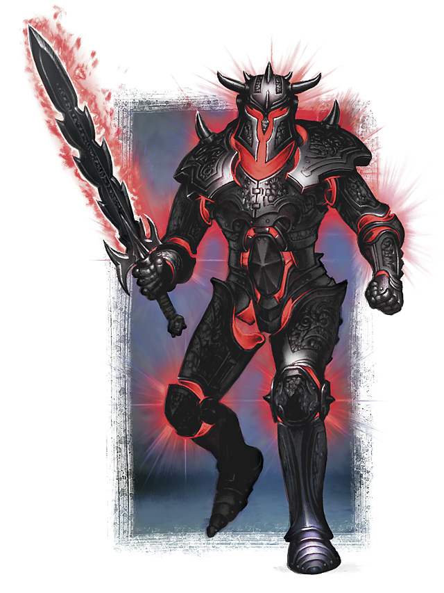
Figure 9: ერთ-ერთი ლიმინური გოლემი
მანუჩარმა და ნორვემირმა გადაწყვიტეს, კლდეზე ერთად აძრომილიყვნენ და პოზიცია დაეკავებინათ. ფრეამ გააფრთხილა, რომ მტრების მაგიური ძალის წყარო დიდი ალბათობით კლდის უკან დამალულისგან მოდიოდა (თვალთავიანი ტიპისგან). დანარჩენი ექსპედიტორები ნელ-ნელა მოიწეოდნენ გზისკენ.
დაკლაკნილ გზაზე ბრძოლა

Figure 10: დაკლაკნილ გზაზე ბრძოლა
ექსპედიტორები თითქოს მოეწყვნენ შესატევად, მაგრამ მაინც ვერ შეთანხმდნენ, ვისთვის შეეტიათ პირველად და როგორ გამკლავებოდნენ ოც ყინულის რაინდს. ამ შეხლა-შემოხლაში ნორვემირმა თავისი ადგილმდებარეობა გაამჟღავნა და ქვევით მოსიარულე მტრის ყურადღება მიიქცია. ამით ბრძოლა დაიწყო.
თვალთავიანი არსება კლდეზე ამოვარდა და მანუჩარს დაუდგა თვალწინ. ორივემ ერთმანეთი ეგრევე იცნო. ერთმანეთის პირისპირ იდგნენ ტომ კენტი და მანუჩარი, ექსპედიციის თანაგუნდელები. მცირედი გამოლაპარაკების შემდეგ ცხადი გახდა მანუჩარისთვის, რომ კენტის ხსნა არ იყო და უნდა მოეკლა. დანარჩენი ექსპედიტორები გზის დასაწყისში გაიჭედნენ. ცხადი იყო, რომ 5-10 ყინულოვანი რაინდის გარღვევა არ წარმოადგენდა არცერთისთვის რთულ საქმეს, მაგრამ ყველამ ამა თუ იმ მიზეზის გამო არჩია, ადგილზე დარჩენილიყო. ფრეამ შელოცვა დასახრა და დაინახა უჩინარი არსება, რომელიც, როგორც მიხვდა, მართავდა ამ რაინდებს. ინფორმაცია ტელეპათიურად გადასცა ყველას, მაგრამ სიტუაცია უფრო და უფრო უარესდებოდა: კლდეზე მებრძოლებს ტომ კენტი და ახლად ამოსული გოლემი ავიწროებდნენ, რაინდები კი გზის დასაწყისში შეჯგუფებულებთან იწევდნენ და სერიოზულ ზიანს აყენებდნენ. ჩებურეკმა თავისი ძალა ამოწურა და გონება დაკარგა. შეტევა-შემოტევების მერე, მანუჩარი ჩამოხტა კლდიდან და გზისა და კლდის გასაყარისკენ გასწია დასამალავად.
ფრეას მიერ დანახული უჩინარი არსება აღმოჩნდა ედ გატსი, ადრე ცნობილი, როგორც სტალმეერის იმპერიის №1 საზოგადოებისთვის საშიში ადამიანი და ცივსისხლიანი მკვლელი. თუმცა ისტორიის მოყოლის დრო არ იყო, რადგან იგი უკვე მაგიკოსისკენ იწევდა. პარალელურად, ერთ-ერთი ყინულოვანი რაინდი გზისპირა მოაჯირზე აძვრა და მიმალული მანუჩარი დაინახა. Magic Missile-ის გასროლის მერე, ჟან-პიერმა გონება დაკარგა. ამის მომსწრე ფრეა წამსვე მივარდა მასთან და ჯიბეში შენახული ხსნარი ჩააყუდა. გაცოცხლებულმა მანუჩარმა მადლობა გადაუხადა, არ მოელოდა რომ მის სახსნელად მოვიდოდა ქალი, რომელსაც 1 საათის წინ კინაღამ სიყვარული აუხსნა. სამწუხაროდ ამის საპასუხოდ ფრეამ გატსისგან მძიმე დარტყმა მიიღო. სხვებიც ცუდ დღეში იყვნენ გარდა ვორასისა, რომელიც ადგილზე შედარებით მტკიცედ იდგა.
კლდეზე დარჩენილი ნორვემირი პირისპირ დაუდგა ლიმინურ გოლემსა და ტომ კენტს. მიხვდა რა ვითარებას, ადონის სახელით გაააქტიურა CUBIC CONCILIUM WRATH. ტომ კენტის გარშემო გაჩენილმა ცამეტმა რაინდმა სულ სხვადასხვა იარაღი აძგირა აბჯარში. მომაკვდავი, ნორვემირის ხელით კლდიდან, გზის იქითა ხრამში გადავარდა.
ექსპედიტორებმა დანარჩენებთან გამკლავებაც შეძლეს და მანდარინის ინსტიტუტისკენ მიმავალი გზა გაასუფთავეს.
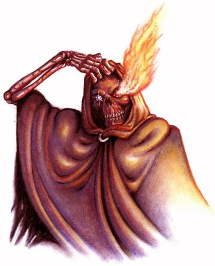
Figure 11: ტომ კენტი შიშისა და ალის თვალებით
სესია 7 (კვირა, 1 მაისი, 2022) - უმბრა III, წითელი ელფერის შემოქმედნი
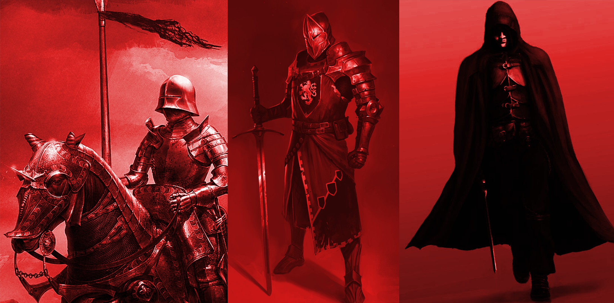
Figure 12: მარცხნიდან მარჯვნივ: კანონი, მიგნონი, ვერნონი — მანდარინის ინსტიტუტის დამაარსებელნი.
ინსტიტუტის ჭიშკართან
ტომ კენტის, ედ გატსისა და 20 ყინულოვანი რაინდის მკვდარი სხეულის ფონზე ექსპედიტორები მიადგნენ მანდარინის ინსტიტუტის ჭიშკარს, რომელიც დიდი შენობის ფონზე სილამაზით ყურადღებას იქცევდა. რკინის მავთულები და ვაზის დეკორაციული ელემენტები ამშვენებდნენ უკან გამოჩენილ ეზოსა და მოშორებით მდგომ დიდ შენობას. ჭიშკრის გვერდით მდგომმა ქვის ქანდაკებამ ყველას ყურადღება მიიპყრო. გამოსახული იყო აბჯრიანი ფიგურა, რომელიც აღმოჩნდა ქალი. ცოტა ხანი ფიქრის შემდეგ ჟან-პიერ მანუჩარს გაახსენდა მისი ვინაობა: სტალმეერის დედოფალი, შეიდი რაზორი. მისი იქ გამოჩენა ცოტა არ იყოს ავისმომასწავებელი გახლდათ. ყველას გაახსენდა, თუ როგორ გაუჩინარდა დედოფალი მიწათ განრიდებამდე ზუსტად ერთი დღით ადრე ისე, რომ ამის შემდეგ აღარავის უნახავს.
უცბად გამოჩნდა მისიამდე გადაკარგული რურიკ ბრატისტა, რომელმაც ყველას კითხვაზე, სად იყავი და რას აკეთებდი, პასუხი გასცა, დავდიოდი და ხალხს ვეხმარებოდიო. ახალმოსულებისთვის უცნობი იყო მისი ვინაობა, მაგრამ ორივემ უცბად აუღო ალღო მის პიროვნებას. მანუჩარმა სასიამოვნო ტონით უთხრა ერთი-ორი რამ, ფრეამ კი ეკლები გამოიბა და პირველი შთაბეჭდილება არც თუ ისე დადებითი დატოვა.
ქვის მკლავებში მოქცეული
მანუჩარმა გადაწყვიტა, რომ ბევრი არ ეფიქრა და კარიბჭისკენ გასწია გასაღებად. სადაც იყო ხელს მიადებდა, რომ დედოფლის ქანდაკება გაცოცხლდა თითქოს, ხელი გამოწია და გადაეფარა. ცივი ქვის შეგრძნებამ გააკვირვა მანუჩარი, განსაკუთრებით იმის გამო, რომ ქანდაკება ადამიანივით კი არა, ზეადამიანურად მოძრაობდა. დედოფალმა ტელეპათიურად მიმართა ყველას, რომ წარმოეთქვათ პაროლი. არავინ იცოდა, რისი გაგონება სურდა ქანდაკებას, მაგრამ ბევრი ფიქრი არ მოუწიათ. დედოფალმა მეორე ხელით უკნიდან გამოიტანა და ძირს დააწყო შვიდი ფიალა. შვიდივე გამჭვირვალე იყო, მაგრამ თითოეულში სხვადასხვა ფერის სითხე ესხა.
ვორასმა ამასობაში ჰამიდელისგან ნაყიდი ხმალი იშიშვლა და ქვის ხელს ატაკა. დედოფალს არაფერი მოსვლია, ხმალი კი კინაღამ იქვე გატყდა.
მანუჩარმა ამჯერადაც ინიციატივა გამოიჩინა, მივიდა ფიალებთან და ხელში აიღო ის, რომელშიც ოქროსფერი სითხე ესხა. ერთი ყლუპის მოსმის მერე მყისვე გონება დაკარგა და განიცადა მკაფიო ხილვა:
წითელი უკიდეგანო ზღვა. სანაპირო. იმაზე უფრო შორს ვარ ზღვიდან, ვიდრე მეგონა. გოგონა დგას მოშორებით. შავი თმა და თეთრი ტანსაცმელი.
მიზანი.
შემდეგი მივიდა ჩებურეკი და მოსვა ნარინჯისფერი სითხე. ისიც იმწამსვე გაითიშა და იხილა:
უზარმაზარი ბიბლიოთეკა. წიგნებისა და გრაგნილების დასტები ყრია აქეთ-იქით. პაპირუსები გაბნეულია იატაკზე.
არის.
ნორვემირმა შავი სითხე მოიყუდა. ფიალის ჩაყოლებასაც აპირებდა, მაგრამ მიხვდა, რომ შუშას ორგანიზმი ვერ გაუძლებდა. იხილა:
თეთრი. ყველგან, ყველა მიმართულებით, სითეთრე.
გაღვიძება.
ვორასმა დალია წითელი სითხე. იხილა:
უზარმაზარი წითელი ზღვა. აბობოქრებული წყალი. ტაღლები. ნავში ვარ. წყალი კანზე რომ მხვდება, წითელი ფერი უქრება. ნავი წინ მიიწევს. გემი. უზარმაზარი, ასეთი დიდი ცხოვრებაში არ მინახავს. შიგნეულობა არ აქვს. ჩონჩხივითაა. მაინც ტივტივებს.
ღმერთის.
რურიკმა აირჩია მწვანე სითხე. იხილა:
ღამე. უზარმაზარი მთა. თეთრი მწვერვალი. მთვარე ასეთი კაშკაშა ცხოვრებაში არ მინახავს. ოთხი ჩრდილი დგას მწვერვალზე. ახლო ხედი. ვერცხლისფერი არიან თავიდან ბოლომდე. დაბლა იწყებენ ჩასვლას.
ჩვენი.
ფრეას დარჩა ლურჯი სითხე. დალევამდე ქანდაკების ქვეშ დაჯდა და მას ზურგი მიაყუდა რომ ცუდად არ დავარდნილიყო. იხილა:
წითელი წყლის ქვეშ. ფსკერი. უზარმაზარი გემი. თვალით არნახული ზომის. შავი. გარშემო უდაბნოს ჰგავს.
საბოლოო.
გაღვიძებისთანავე ექსპედიტორები ან მხნედ მოდიოდნენ, ან ისეთი გამომეტყველება ჰქონდათ სახეზე, თითქოს ვიღაცამ მუცელში დანა გაუყარა. ვის რა ბედი შეხვდა თითქოს შემთხვევითობის პრინციპით იყო გადაწყვეტილი. ხილულიდან გამომდინარე ცხადი გახდა, რა უნდა ეთქვათ დედოფლისთვის. ამისდა მიუხედავად, მაინც იყო წამიერი დაყოვნება, თითქოს მოცემულ სიტყვებში შეიძლებოდა სულ სხვანაირი აზრი ყოფილიყო დამალული. საბოლოოდ მანუჩარმა ქანდაკებას განუცხადა:
„ჩვენი საბოლოო მიზანი არის ღმერთის გაღვიძება“.
ჭიშკარი გაიღო.
ინსტიტუტის ეზოში
ექსპედიტორების თვალწინ გადაიშალა მანდარინის ინსტიტუტის შენობა და მისი ეზო. ამ პირველს ეტყობოდა, რომ შინდისფერი აგურით იყო აშენებული, დაკვირვებული თვალი კი შეამჩნევდა, რომ აგურებს შორის რაღაც უცხო იყო გარეული. ეზოში იდგა დიდი შადრევანი, რომელიც რაღაც ძალიან ბლანტი წითელი სითხით იყო სავსე. მის გარშემო დაბლად შეკრეჭილ ბალახში სარწყავი აპარატი იმალებოდა. ისიც იმავე სითხეს ასხამდა. ალაგ-ალაგ იდგა სამი გამომშრალი ხე, ერთი შეხედვით მომაკვდავი, ინსტიტუტის კართან კი აღმართული იყო ორი დიდი სვეტი, რომელთა თავზეც ცეცხლი იყო მოკიდებული და შავი კვამლი ამოდიოდა.
მანუჩარს ინტუიციამ რაღაც უკარნახა და უკან გამოვიდა. ჭიშკართან დაბრუნდა ქვით ხელში, რომელიც შემდგომ ისროლა ბალახთან ახლოს. სარწყავი აპარატი გააქტიურდა და იგივე ბლანტი წითელი სითხე მიმოასხა ქვის გარშემო. რომ დააკვირდა განლაგებას, შეამჩნია რომ აპარატები ისე დაეყენებინათ, რომ მთელ ეზოს ფარავდა. ერთ ნაბიჯსაც ვერ გადაადგამდი, რომ არ გაგეაქტიურებინა.
ამასობაში ფრეამ დასახრა მაგიის შემჩნევა რიტუალის სახით. დიდი ხანი მოუნდა, მაგრამ შედეგად გამოჩნდა მაგიის მომავალი წყარო, რომელიც ინსტიტუტის შენობის მარჯვნივ, წყვდიადში იმალებოდა. გარდა ამისა, ჯადოქარმა იგრძნო ძლიერი ბოროტი აურა, თითქოს რაღაც სულით ბოროტ არსებას გაეაქტიურებინოს შელოცვა. აგრეთვე გაირკვა, რომ სარწყავები თავიდან ბოლომდე მექანიკური იყო.
მსჯელობის შემდეგ ჩებურეკმა ლევიტაცია გაააქტიურა და მანუჩარი ასწია 20 ფუტით ზევით ჰაერში. იგი გადააფრინდა ეზოს და ფრეას მიერ მითითებული მაგიური წყაროსკენ გასწია. წყვდიადში შესვლის მერე ცხადი გახდა, რომ ეს უბრალო ჩრდილი კი არა, მაგიით შექმნილი სიბნელე იყო. სადაც იყო უკან გამოვიდოდა მანუჩარი, რომ იგრძნო, მასზე შემბოჭავი შელოცვა დასახრეს. საბედნიეროდ, მან შეძლო თავის არიდება და დეტალური ტელეპათიური კომუნიკაციის წყალობით რურიკმა დისტანციურად გააქტიურა დღის სინათლე, რომელმაც წყვდიადი გააქრო. გამოჩნდა ტყე, რომელიც თურმე ინსტიტუტის შენობას ესაზღვრებოდა. მანუჩარი შევიდა უფრო ღრმად…
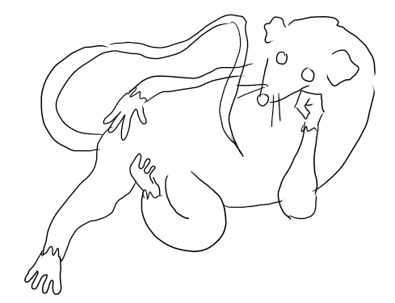
Figure 13: ტყეში წამოწოლილი ვირთხის ჩანახატი
რას არ ელოდა იგი, მაგრამ უშველებელ გვერდზე გადაწოლილ ვირთხას არა. შეშინებული, უკან გამოვიდა, მაგრამ ამან ყველა სხვა ექსპედიტორის პროტესტი გამოიწვია, დიდწილად იმიტომ რომ არავის უნდოდა იმ წითელი სითხით დაფარულიყო. გამოვარდნილ მანუჩარს უკან მოყვა აბისალური სიტყვები:
«Человек, блять»
ჩებურეკმა, ამის შემყურემ, გადაწყვიტა, რომ შესასვლელთან მდგომი სვეტები მოეშორებინა და ერთ-ერთი ჩამოაგდო. მის თავზე გაჩაღებული ცეცხლი ბალახსაც მოეკიდა.
ადონმა, რომელსაც ისევ მსუქანი ბავშვის ფორმა ჰქონდა, ხმა ამოიღო. ექსპედიტორებს უთხრა, რომ ამ ბლანტ წითელ სითხეს ეძახიან შინდს. ყველას კი ჰქონდა გაგონილი მის შესახებ, მაგრამ არავინ იცოდა, რომ ადრე მას რიტუალებში ხმარობდნენ სისხლის ჩამნაცვლებლად „როგორც ლეგენდები მოგვითხრობენ“. ამის გაგონებაზე რურიკი ეზოში შევიდა. სარწყავმა აპარატმა შინდი ზედ შეასხა თუ არა, მიხვდა, რომ მხედველობა დაკარგა. ადონმა სასხვათაშორისოდ თქვა, შინდის მეტისმეტი კონცენტრაცია ორგანიზმში თვალებს აზიანებსო. კანზე მოხვედრილი სითხე თურმე ძალიან სწრაფად შეიწოვება. რურიკის საბედნიეროდ, შინდის დამატებითი დოზის არმოხვედრის შემთხვევაში სიბრმავე 2 წუთში თავისით გადისო, დასძინა.
ეზოში ვორასიც შევიდა. მასაც შეესხა შინდი, მაგრამ არაფერი მოსვლია მისი ბუნებიდან გამომდინარე.
ჩებურეკი მივიდა ერთ-ერთ სარწყავ აპარატთან და ცეცხლი წაუკიდა. დიდი არაფერი მოხდა, აპარატი ისევ ჩვეულებრივად მუშაობდა. ჩებურეკსაც არაფერი მოუვიდა, რადგან გენასი იყო.
ადონმა ექსპედიტორებს უფრო დეტალურად გააცნო ის ანტიკური სამკურნალო რიტუალი, რომელზეც შინდზე ლაპარაკის დროს მიანიშნა. მის შესასრულებლად საჭიროა ხის ტოტი დასველდეს შინდში და გადაეცეს იმ სვეტს, შესასვლელთან რომ იდგა. ამის მერე სვეტი იწყებს სამკურნალო სითხის დენას, რომელიც არა მარტო დაჭრილს უშუშებს იარებს, არამედ ჯანმრთელ ადამიანსაც კიდევ უმატებს სიმხნევეს.
ნორვემირმა თხოვა ადონს, რომ მისულიყო ერთ-ერთ ხესთან. უსიტყვოდ მიფარფატდა მასთან თუ არა, ხის ტოტმა, რომლის თავიც დანასავით ბასრი იყო, მოტყუებითი მანევრი განახორციელა და წამში ეტაკა ადონს კისერში.
ჩებურეკმა წარმატებით გაყინა მეორე ხე, რომელიც ცენტრში იდგა. ამასობაში ნორვემირმაც შედგა ფეხი ეზოში და დაბრმავდა.
მანუჩარი უკან მიბრუნდა ვირთხისკენ. მას თან ჩუმად შეყვა ვორასი, რომელმაც ვირთხას სასტიკად გლიჯა ხმალი და თავი მოკვეთა. ამის მერე ცხადი გახდა, რომ ეს ვირთხა მხოლოდ სატყუარა იყო და ვინც მახე დააგო, მალე გამოჩნდებოდა.
ვეფხვკაცი და სამი რაინდი
ეზოში შემოვიდა ორი ცხენოსანი. ერთი ალბათ ეცნობოდა ნორვემირს რომ არ დაბრმავებულიყო, მეორეს კი პირველად ხვდებოდა. გვერდისგვერდ მოდიოდა ვეფხვისთავიანი ადამიანისებრი არსება და რაინდი, რომელიც ცხენითურთ რკინის აბჯრით იყო მოსილი. ადონმა ყველას გასაგონად განაცხადა, რომ ვეფხვისთავიანი იყო ფარსადანი, სტალმორის ცხონებული ძმა, რომელიც გაცოცხლდა ვეფხვის სხეულში და მიეცა როგორც ადამიანის გონი, აგრეთვე ვეფხვის სიფიცხე და ღონე. სიტუაციის მიხედვით კი ცხადი გახდა, რომ აბჯრიანი რაინდი მანდარინის ინსტიტუტის დამაარსებელი სამი ძმიდან ერთ-ერთი უნდა ყოფილიყო.
რაინდი მიუახლოვდა მანუჩარს და აგდებულად უთხრა, თქვენი მკვდარ ზეგანზე ასვლა არ იქნება საპირწონე, იგი ისეთი მკვდარი არაა, როგორიც გგონიათო. მანუჩარმა იცნო ის, როგორც კანონი. ბრძოლა გაჩაღდა.
იარაღის ამოღება და ეზოში შემავალი ჭიშკრის ჩაკეტვა ერთი იყო. ჩებურეკი და ფრეა გარეთ დარჩნენ. ეს ერთი მხრივ სასიხარულო ამბავი იყო, რადგან ორივეს მომაკვდავი იერი ჰქონდა, მაგრამ ამავე დროს ბრძოლას თითქმის გამოთიშული იყო ორი მაგიკოსი წევრი. სიტუაციის უიმედობით მოტივირებული, ჩებურეკი ქანდაკებასთან მილასლასდა და სასმისი თხოვა. შესმიდან მეორე წამს ძირს დაეცა გონდაკარგული. ფრეა ცდილობდა შელოცვები ესროლა კარიბჭის ღრიჭოებს შორის, მაგრამ მისი ხელიდან გამომავალი უზარმაზარი გრუხუნის მიუხედავად, რაინდს ცოტა თუ დაუზიანა. ფარსადანმა თავისი საფირმო ხრიკი გაიმეორა და ამჯერად მანუჩარი დაწყევლა უძილობით.
ფრეასთვის ცხადი გახდა, რომ უკანა ფლანგზე ყოფნა ბრძოლას ვერ მოაგებინებდა. ეს აზრი უფრო განუმტკიცდა იმის მერე, რაც გონებამახვილი რურიკი ჩებურეკს მიეშველა და ჭრილობები შეუშუშა იმდენად, რომ ფეხზე ამდგარიყო. სიხარბით შეპყრობილი, იგი კვლავ მივიდა ქანდაკებასთან და კიდევ ერთხელ შესვა სითხე ფიალიდან. ამჯერადაც დავარდა, ოღონდ რაღაც სასწაულით არ მომკვდარა. ამაზე ფრეას ყურადღება არც მიუქცევია, რადგან ბრძოლის ყიჟინამ იგი პირდაპირი მნიშვნელობით დააბრმავა: ეზოში ფეხშედგმულს წამსვე ეცა შინდის ნაკადი. მიხვდა, რომ კარიბჭე პაროლის თავიდან თქმის საშუალებით შეეძლო გაეღო, მაგრამ შემდეგ ნაბიჯზე აღარ უფიქრია, თავისივე თავის გასაკვირადაც კი.
განრისხებულმა მანუჩარმა ვეფხვისთავიანის სუსტ წერტილს მიაგნო და ჯერ გრაციოზულად აკუწა, შემდეგ კი თავი მოკვეთა. ისეთი ძალით განახორციელა ბოლო დარტყმა, რომ სუფთად მოჭრილი კისერი მოშორებით გადავარდა. სანამ ეს ხდებოდა, ნორვემირმა და ვორასმა შეამჩნიეს უცხო სილუეტი ინსტიტუტის სახურავზე. ჯერ არბალეტით ცდილობდა ვიღაცის მიზანში ამოღებას, მაგრამ მერე გადაიფიქრა და ჯაველინები ამოაწყო. კანონმა კომპანიონის სიკვდილის მერე უცბად გადააფასა სიტუაცია და გააქტიურა შელოცვა. ყველას თვალწინ აბჯრიან ცხენზე მჯდომი რაინდი გარდაისახა უზარმაზარ მწვანე გველად, რომელიც იყო სამი ნორვემირისხელა სიგრძით და ისეთი მძიმე, რომ მის ქვეშ მოყოლილი ცხენი ყურძენივით ჩაჭეჭყა. მანუჩარმა იგემა დარტყმა, რომელიც ვიღაც სხვა ახალმა მტერმა განახორციელა. როგორც ჩანდა, მზირები მტრებსაც ჰყავდათ, თანაც საკმაოდ გამოცდილი.
დაბრმავებული ფრეა კედელს მიყუდებულიყო ზურგით და ქანდაკებისკენ მილასლასებდა. განწირულმა სასმისი ითხოვა, შესვა და ჩებურეკის ბედი გაიზიარა. ეზოში მესამედ გაისმა უგონო სხულის დავარდნის ხმა. რურიკის სმენას ბადალი არ ჰყავდა იმ დღეს. წამსვე შეუდგა სამზადისს: ჯერ ყველა ექსპედიტორი დალოცა, შემდეგ კი ადონს Mass Cure Wounds შეალოცინა. სიცოცხლის ენერგიით აღსავსე, ექსპედიტორების გუნდი მზად იყო პირდაპირ შერკინებოდა მოწინააღმდეგეს. მათ საუბედუროდ, ფარსადანს კიდევ ერთი ხრიკი ჰქონდა შემონახული.
მკვდარი სხეულის ქვეშ წითლად განათდა მაგიური წრე. სხეული ფეხზე დადგა, მოკვეთილი თავი მასთან მიფრინდა და შეერწყა. ადამიანობა თუ ვეფხვობადაკარგული არსება ყველას თვალწინ გადიდდა იქამდე სანამ ადრე ნანახი ეტიენის მასშტაბს მიუახლოვდებოდა. ამასობაში სახურავიდან მაგიური მფრინავი ხალიჩით ჩამოფრინდა ჯაველინის ხელში მჭერი მებრძოლი სახელად მიგნონი. შადრევანის თავზე გაჩერდა ზუსტად ისე, როგორც ჩებურეკის ლევიტაციის შელოცვამ იცის ხოლმე. ფარსადანის ტრანსფორმაციის დასრულებისას, მანაც გაააქტიურა შელოცვა და გადაიქცა კანონისნაირ უზარმაზარ მუქი წითელი ფერის გველად და შინდის შადრევანში ჩაიბუდა.
სამი უზარმაზარი არსების ქვეშ მოყოლილი მებრძოლებისთვის სასოწარკვეთა ახლოვდებოდა. სწორედ იმ მომენტში, როდესაც უნებურად მოაფიქრდებოდათ მაგიკოსებს, ხომ არ გავქრე აქედან და ბედს მივანდო ესო, რურიკმა ჯერ კიდევ თვალთ უნახავი შელოცვა წარმოთქვა. აწ უკვე გოლემად ქცეული ფარსადანი თითქოს შეეწინააღმდეგა, მაგრამ მაინც თვალის დახამხამებაში დორფის მიმართ მორჩილი შეიქმნა. წამიერი დაყოვნების მერე ახალმა ბატონმა გასცა ბრძანება, შეუტიე შადრევანს და მასში მყოფ გველსო. ჩამოკრა ხელი ზეციდან ფარსადანმა. ყრუ გრუხუნი გაისმა და მტვრითა და შინდით აივსო ჰაერი. თუკი ფრეას გასროლილი ქუხილი ნაწყენი ქალღმერთისა იყო, გოლემის მიერ ჩამობრძანებული ხელი ხორცშესხმული ღვთაებრივი რისხვასავით გახლდათ.
მალულად მოარულმა მეომარმა მიზანში უკან მდგომი ჯადოქარი ამოიღო. მივარდა თუ არა მასთან, წამში მოიმწყვდია და სამახსოვროდ ჭრილობა დაუტოვა. ამის შემდეგ მანაც, ვერნონმაც, წარმოთქვა იგივე შელოცვა და ტრანსფორმაცია განიცადა. მისი სერპენტილური ფორმა ჩონჩხიანი, უკუდავითივით მოუკვდავი უკვდავი იყო.
რურიკის მანევრმა დიდი უპირატესობა მისცათ მებრძოლებს, მაგრამ ნორვემირისა და ვორასის უიღბლო პოზიცირებას მაინც ვერაფერი გაუხდა. ორივე ფარსადანის გარშემო იდგა ისეთ მანძილზე, რომ ცალი ნაბიჯითაც უკან ვერ იხევდნენ. გულანთებულ ნორვემირს გულზე მოაწვა, როცა გაიაზრა, რამდენად უძლური იყო ამ სიტუაციაში: მისი ხმალი ფარსადანის კანს ვერ ჭრიდა. ამის ფონზე, გადარჩენისთვის ყოველი ღონით ბრძოლის მიუხედავად, ვორასი დაეცა. შემოეშალა თავისი ადამიანის ნიღაბი და იმ უკანასკნელი ენერგიით, რაც შემორჩენოდა, იხავლა: „ნუ მიყურებთ!“
…მაგრამ სულ რაღაც ექვს წამში შადრევანი, რომელშიც მიგნონი ბანაობდა, ჩებურეკმა გაყინა, მანუჩარმა კი ისიც კარგად აკუწა. ამის შემდეგ რურიკმა წარმოთქვა შელოცვა, რომელიც ღვთისადმი შევედრებას უფრო ჰგავდა. მერე კი დახედა დაცემული ვორასის ადგილს და დაინახა პაწაწუნა არსება:
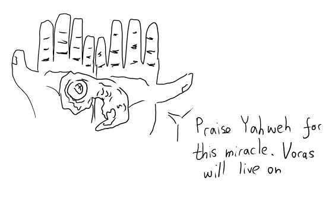
Figure 14: გაცოცხლებული ვორასი რურიკის ხელში (ჩანახატი)
იგი ცოცხალი იყო. სხვა სახის, ახალდაბადებულზე უფრო ახალგაზრდა, მაგრამ ცოცხლობდა.
მოწინააღმდეგეებიდან ცოცხალი მარტო ვერნონი დარჩენილიყო. მიგნონის სიკვდილთან ერთად გოლემიც ძილის რეჟიმში გადასულიყო. მებრძოლთათვის მოულოდნელად, ჩონჩხიანი გველი ადამიანად გადაიქცა და რაც ძალი და ღონე ჰქონდა, ინსტიტუტისკენ გავარდა. დაინახა თუ არა, ადონი ყველასგან დაუკითხავად გაეკიდა და ყველას გააფრთხილა, სასწრაფოდ მოშორდით აქაურობასო.
წითლის უკანსვლა
ევაკუაციის შემდეგ გაისმა არნახული და არგაგონილი გრუხუნი, რომელსაც მოყვა დამაბრმავებელი სინათლე. წითლად შეფერილი ცა კაშკაშად განათდა და მკაფიოდ გამოჩნდა სოკოსმაგვარი ღრუბელი, რომელიც მალევე ამოიწია. აფეთქების სითეთრეში მკრთალად მოჩანდა ლურჯი ფერი, რომლითაც თითქოს ადონის კრისტალის სხეული იყო შემოსილი. ცხადი გახდა, რომ ადონი ამ აფეთქებას როგორღაც აკავებდა.
რომ ჩაწყნარდა ყველაფერი და მტვერი გააბნია ნიავმა, ადონი გამოჩნდა, როგორც კრისტალის მამაკაცი. სხეულს სრულფასოვანი ფორმა ჰქონდა მიღებული. მის უკან ჩანდა არა შინდისფერი აგურის ინსტიტუტი, არამედ ერთი კედლის ფასადი და ნანგრევები. მხოლოდ შესასვლელის კედლის პატარა ნაწილი იდგა, ისიც ძლივს. ინსტიტუტი სრულიად გასწორებულიყო მიწასთან. აგურებს შორის შავი ჭვარტლი იყოო, თქვა ადონმა. ამ რეგიონში ასე იციან, რამის გამხელა რომ არ უნდათ, სახლებს წინასწარ ნაღმავენ ამით და დრო რომ მოვა, ასე აფეთქებენო.
ზევით აიხედეთო, ბრძანა ადონმა. ცა ალაგ-ალაგ მოწმენდილიყო და გამოჩნდა ამომავალი მზე. დანახვისას თუ შეამჩნიეს ახალმოსულმა ექსპედიტორებმა, რომ რაც უმბრას მიწაზე შედგეს ფეხი, მზის ამოსვლა არ უნახავთ. მანუჩარისთვის ეს იყო ცხრა წელიწადის განმავლობაში პირველი გამოცდილება. ქრება ის ბოროტი ძალაო, დასძინა. ბნელი დაბლობი იმდენად ბნელი ახლა აღარ არისო. ფეხებქვეშ მიწაზე ბალახი ამოდიოდა. უმბრაში არცერთს არ უნახავს ცოცხალი ველური მცენარე.
„შემდეგი დანიშნულება: მკვდარი ზეგანი. სხვათა შორის, არც ერთ ექსპედიტორს იქ არ შეუდგამს ფეხი.“
„ჩანაწერი წითელი ზღვის შესახებ“
ადონმა გაუმხილა ექსპედიტორებს, რომ ვერნონმა ინსტიტუტი სწორედ იმ ჩანაწერის გამო ააფეთქა, რაც ხელში ეჭირა. სტალმორის ავტორობით იყო იგი:
„როცა პატარა ვიყავი, გამზრდელმა წამიყვანა წითელი ზღვის სანახავად ანტივესის ჩრდილოეთით, ვინაიდან მაწუხებდა ასთმა, და ზოგადად სუსტი ყმაწვილი ვიყავი. «წითელი ზღვა» სინამდვილეში უზარმაზარი ტბა ყოფილა, ჩემდა გასაკვირად, და წითელი კი არა, ლურჯზე ლურჯი ყოფილა. გამზრდელმა მითხრა, ამ ტბას ნებისმიერი სენის განკურნება შეეძლო. როდესაც სახე ამ ტბის წყალში ჩავუშვი, მივხმდი, რომ ჩემი ასთმა დარჩა, მაგრამ განიკურნა სხვა სახის სენი.“
სესია 8 (კვირა, 15 მაისი, 2022) - უმბრა IV, მკვდარ ზეგანზედ
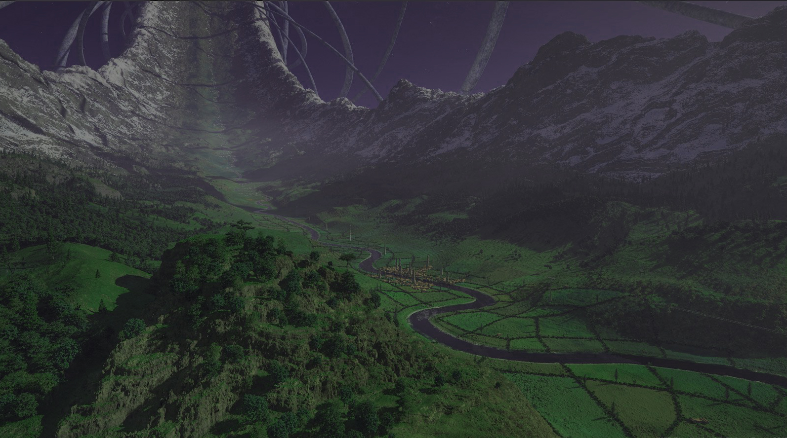
Figure 15: ვერიდისის პროვინცია, ტექტონიკური წრედი, „მიწათ განრიდებამდე“.
ორი წითელი ზღვა
მიწასთან გასწორებული მანდარინის ინსტიტუტის ფონზე პლუტარქე ადონი სრულად ქმნილი ადამიანის სახით იდგა გზაზე. მტვრის აყრისა და გრუხუნის ჩაწყნარების მერე, მის შემყურე ექსპედიტორებს აუწყა, რომ ამ ადგილის განადგურებით, წესითა და რიგით, გველადქმნის ახალი შემთხვევები აღარ იქნება. სწორედ ამ შენობიდან გამომდინარეობდა ეს დაავადებაო. ამასთან, აქაურობის გასუფთავებით გზა გაიხსნა მკვდარი ზეგანისკენ. შემდეგი დანიშნულება ვერცერთი ექსპედიციისთვის ვერგაკვალული სწორედ ეს მკვდარი ზეგანი და მასზე მდებარე წითელი ზღვა დაასახელა. ამის მიზეზი ის ჩვენებები იყო, რომლებიც ექსპედიტორებმა დედოფლის ქანდაკების მიერ მოწოდებული სასმისის შესმის შემდეგ იხილეს. სანაპირო, შავთმიანი ბავშვი, წითელი წყალი და უზარმაზარი ჩაძირული თუ ზედაპირზე მოტივტივე გემი. იქ ინახება სიმართლე მიწათ განრიდების შესახებო.
ადონმა მიწაზე დასახა სტალმეერის ძველი იმპერიული რუკა, სადაც „წითელი ზღვა“ ერთადერთ ადგილას — ვერიდის არქისის აღმოსავლეთით — იყო მონიშნული. დაინახა ეს თუ არა, ფრეამ ადონს გაახსენა სულ რამდენიმე წუთის წინ წაკითხული სტალმორის ჩანაწერი, რომელშიც მან თქვა, რომ ანტივესის ჩრდილოეთით, სულ სხვა მხარეს, წავიდა. განხილვის მერე აღმოჩნდა, რომ თურმე ყოფილა ორი „წითელი ზღვა“: სტალმორი სადაც იყო, იგი ნამდვილად ლურჯზე ლურჯი წყლით გამოირჩეოდა, ხოლო რუკაზე ასახულს ისეთივე წითელი ფერი ჰქონდა, როგორიც ვორასმა იხილა, კანზე შეხებისას რომ მკრთალდებოდა. ადონმა აგრეთვე ახსენა, რომ 100 ადამიანიდან 50 „წითელი ზღვის“ ხსენებისას ერთს გაიფიქრებს, დანარჩენი 50 — მეორეს. როგორც ფრეა მიხვდა, აქ ხელოვნურად შექმნილ დაბნეულობას ჰქონდა ადგილი.
ამასობაში მოსაღამოვდა. თოვა დაიწყო, ოღონდ წითლის მაგივრად ნაცრისფერი, ჭვარტლისნაირი ფიფქები ცვიოდა. ინსტიტუტის უკან ხელოვნურად დაბნელებული მიწა უკვე კარგად ჩანდა, შენობის უკან ქვაფენილიანი ბილიკი ადიოდა ზევით, ზეგანისკენ. რურიკმა გადაწყვიტა, პატარა ბავშვად თვალის დახამხამებაში ქცეული ცალფეხა ვორასისთვის ხელოვნური ფეხი გაეკეთებინა. ხის უბრალო პროთეზი გამოუვიდა. ნორვემირი სადარაჯოდ დადგა ჯერ კიდევ ფეხზე მდგომი კედლისკენ, ფრეაც უკან მიყვა, ქვეშაგები გაშალა და დაიძინა. ფრეას მაგალითს მიბაძეს სხვებმაც, რურიკის გარდა, რომელსაც ნახევარი ღამე ეძინა მხოლოდ. მონაცვლეობით დარაჯობდნენ.
აისის მოსვლამდე ნორვემირმა ფხაკუნი გაიგონა თავის კუბოზე. თაგვი იყო, რომელიც რატომღაც შიგნით შეძრომას ცდილობდა. მიხვდა რა, რომ პატრონი არ შეუშვებდა, ტყისკენ გაიქცა. ნორვემირს ყურიც არ დაუბერტყავს, ძილი გააგრძელა.
დილა, ინსტიტუტის იქითა გზა, ტყის მცველი
შემდეგ დღეს ექსპედიტორებმა გადაწყვიტეს, ცოტა ხნით მზის შუქზე მოეთვალიერებინათ იქაურობა. ფრეამ ეზოში მიაგნო რაღაც სარდაფის ლუქს. ჩასვლისას აღმოაჩინა 2 სუსტი ცეცხლსაწინააღმდეგო ხსნარი. შემდეგ გასწია კედლისკენ, სადაც თვალი მოკრა რაღაც შავ მასას. რურიკიც ჩაერთო გამოძიებაში. მასა კედელზე იყო მიმაგრებული და მყარი ჩანდა. ორივემ ეს იცნო, როგორც ობსიდიანის ქვა, რომელიც ძვირად ფასობს (1 გრამი ღირს 600 კრონა), მაგრამ რურიკმა თავისი გაიძვერობით ფრეა დაარწმუნა, რომ ეს იყო ნახშირი. მოიპოვა დაახლოებით 30 გრამი.
მანუჩარი დაღლილობისგან ჯიუტად ცდილობდა დაეძინა, მაგრამ საბოლოოდ ვერაფერი გამოუვიდა. ცხადი იყო ყველასთვის, რომ იგი ვერაფერში გამოდგებოდა იმ დღეს.
აღმართის გზისკენ იდგა რტყმისგან განადგურებული, ნახევრად დალეწილი მაჩვენებელი ნიშანი, რომელსაც ეწერა “километр наказания”. ფრეამ იკითხა, ეს რას ნიშნავსო, ნორვემირმა დიდხანს იფიქრა და განაცხადა, კილომეტრიო. ამაზე დაიბნა მაგიკოსი და ჩაეკითხა. საბოლოოდ, საუბარი იქამდე მივიდა, რომ ნორვემირს უხსნიდა რას ნიშნავს „კილო“ და როგორ არის ეს სიტყვები აწყობილი. ბარბაროსი აჟიტირებულიყო და აღშფოთებას გამოხატავდა, ვერაფერი ვერ გავიგე, ეს რა არისო.
ამის შემდეგ ყველა ქვით მოკირწყლულ ბილიკს გაყვა ზეგანისკენ, გზას ჩებურეკი უძღვებოდა. ნორვემირმა იგრძნო მოშორებით, 2000 ფუტის (600 მ.) სიმაღლეზე რაღაც არსების ნიშანკვალი. ავიდნენ თუ არა, დაინახეს ადამიანის ფიგურა თეთრი კანით, თეთრებში ჩაცმული. ფრეამ დასახრა მაგიის შემჩნევა რიტუალის სახით და იგრძნო, გარდამქმნელი ბუნების შელოცვა იყო აქტიური. მიუახლოვდნენ თუ არა წყაროს, იცნეს ადამიანი, ფერმკრთალი და ერთი შეხედვით გონებადაკარგული. ნორვემირმა თვალი მოკრა მისი პიჯაკის ქვეშ გულის ჯიბეებში ჩახეულ პერანგს, მაგრამ ეს არავისთვის უთქვამს. კი ეგონათ თავიდან გულწასული, მაგრამ ფრეას მისვლის მერე მალევე ადგა. ჯადოქარი ცდილობდა, საუბარი გაება, მაგრამ დანარჩენები ხმაურობდნენ, იგინებოდნენ და, ასე თუ ისე, გამომწვევად იქცეოდნენ. ზრდილობით აღსავსე ფრეა პატივისცემას გამოხატავდა ადამიანის მიმართ, რომელსაც იგივენაირი გარდასახვის მაგია აურჩევია სპეციალობად ვითომ. საუბარი ამის მერე დიდხანს არ გაგრძელებულა, რადგან ნორვემირი საბოლოოდ დარწმუნდა უცხოს ვინაობაში და ეს ხმამაღლა გააჟღერა. ექსპედიტორების თვალწინ იდგა 5 ღამის მგლისგან შემდგარი ვითომ ადამიანი.
ნორვემირის თქმა და უცნობის 5 მგლად დაშლა ერთი იყო. ბრძოლა უმალვე დაიწყო. ბარბაროსი წინ გავარდა და თვალის დახამხამებაში სამჯერ სასტიკად აძგირა ხმალი, თითქოსდა სამაგალითო სადამსჯელო ღონიძიებას ასრულებდა. მხოლოდ უკან ორი ნაბიჯის გადადგმის მერე მიხვდა, რომ ყოველი დარტყმა უკან დაბრუნებია, მგელს მაგიით აუსხლეტია ზიანი. ფრეა მოშორებით იდგა თავისიანებისგან, რადგან სულ რაღაც რამდენიმე წამის წინ მის თვალწინ ჩამომჯდარ ვითომ ადამიანს ელაპარაკებოდა. მისდა საუბედუროდ, ამ არჩევანის გამო მგლებმა კუთხეში მიიმწყვდიეს. ერთ-ერთმა ყმუილი დაიწყო თითქოს, მაგრამ ჩვეულებრივისგან განსხვავებით ხმა ასჯერ უფრო მჭექარედ და ხმამაღლა ისმოდა. გვერდზე მდგომმა ჯადოქარმა ვერ გაუძლო და დაყრუვდა. სამაგიეროდ, ამის მერე იგი უმალვე გადატელეპორტირდა მოშორებით.
ყველა მიხვდა, რომ ამ მგლებს ხმლით ვერ აჩეხავდნენ, მაგრამ ჯერ კიდევ გაუგებარი იყო დარტყმისას ვის მიადგებოდა ზიანი, დამრტყმელს თუ მგელთან რამენაირად დაკავშირებულ სხვა პიროვნებას. ვორასმა ითავა ამის გარკვევა, წინ წაიწია და ცალი ხელით სწრაფად განახორციელა შეტევა იმავე მგელზე, რომელსაც წეღაც ნორვემირი კუწავდა. ზიანი ვორასს მიუბრუნდა. ამაში დარწმუნდა თუ არა, მეომარი მიხვდა, რაც უნდა გაეკეთებინა. ხმალი ქარქაშში ჩაიდო და მგელს შეება. წინააღმდეგობა კი გაწია ცხოველმა, მაგრამ ვორასმა იგი მაინც ცალი ხელით ითრია და ისროლა კლდიდან.
მოშორებით მდგომმა ფრეამ თვალის ასახვევად ილუზია დასახა იქ, სადაც ტელეპორტაციამდე იდგა: საკუთარი თავის მომაკვდავი, ტანსაცმელშემოხეული ვერსია. მისდა საუბედუროდ, ორი მგელი გამოვიდა წინ ჩებურეკთან მისასვლელად და გზად ილუზიას ზედ დააბიჯეს. ამით აზრი დაეკარგა გამოსახულებას და გაფერმკრთალდა. ამასობაში ნორვემირმა ვორასისგან მაგალითი აიღო, შეეჭიდა ერთ მგელს და კლდის პირამდე მიათრია. შემდეგ კი ზურგზე მოკიდებულ უკუდავითს გადააწოდა და უბრძანა, გადააგდეო. ჯაჭვით დაბმულმა ამხანაგმა მოისროლა მგელი კლდიდან.
წინ გამომავალი ორი მგელი მივიდა ჩებურეკთან და ისე მაგრად იყმუვლეს, რომ გენასი ადგილზე დავარდა უგონოდ. ვორასს მგელბურთის თამაშის მუღამი გაეხსნა. ცალი ხელით ითრია ორი მგელი, რაზეც ნორვემირმა (და არა მარტო) პირი დააღო და მიათრია კლდის პირას. განსაზღვრული ჰქონდა, ორივე გადაეგდო, მაგრამ მოახერხა მხოლოდ ერთის ხელიდან გაშვება, მეორე კინაღამ ხელიდან გაუსხლტა. ამით შთაგონებული კიდესთან მდგარი ნორვემირი კიდევ ერთ მგელს შეება. მკლავებში მოიქცია თუ არა, ჩაიმუხლა, ზევით აიტაცა და სუპლექსით მოისროლა კლდიდან. შემდეგ კი ახტა და ვორასის ხელში მოქცეულ მგელს მთელი ძალით მოარტყა ფეხი. რა თქმა უნდა, ისიც კლდიდან გადაეშვა.
ხუთივე მგელი რომ გადავარდა, გზაზე გაჩნდა ყინულოვანი ბუღის წრე, რომელმაც დაიწყო ტრიალი ისე, თითქოს ქარბუქი ამოვარდნილიყო. მისი ჩაწყნარების მერე გამოჩნდა ისევ ის თეთრი ადამიანი, ამჯერად მკვდარი. ნორვემირმა უმალვე დაიწყო გაჩხრეკა. თეთრი პიჯაკის გულის ჯიბიდან ამოიღო ხელისგულისხელა მოოქროვილი მონეტა, რომელსაც დატანებული ჰქონდა წარწერა „TESSERARIUS MORMAN V.A“. ამავე ჯიბეში აგრეთვე იყო გრაგნილი, რომელიც, როგორც ადონმა აღწერა, იყო ამავე ღამის მგლის გამოძახების. ადონმა აგრეთვე დასძინა, რომ ბატონი მორმანის პიჯაკი იყო მაგიური და ჰქონდა ის შეტევის ასხლეტისა და უკან დაბრუნების შესაძლებლობა, რომელიც ნორვემირმა იგემა. გადაწყდა, რომ ფრეა გრაგნილსაც და პიჯაკსაც აიღებდა. აგრეთვე გაირკვა, რომ მოოქროვილ მონეტას ვერიდის არქისის ნიშანიც ჰქონდა ზედ დართული.
მოსახვევის იქით
გზის გაგრძელებამდე ფრეამ რიტუალი კიდევ ერთხელ შეასრულა. იგრძნო ილუზიური შელოცვა, რომელიც დიდი მოსახვევის იქითა მხრიდან გამომდინარეობდა. შეკინკლავების მერე ნორვემირი წავიდა წინ, რომლის ზურგსაც ჯადოქარი ამოეფარა. აღმოჩნდა, რომ მაგია ჩონჩხისგან გამომდინარეობდა. ადამიანისა იყო. ადონმა ფრეას უთხრა, რომ ეს შელოცვა უნიკალური იყო და გარდაცვალების შემდეგ შეტყობინების დასატოვებლად იყო განკუთვნილი. ამის გამგონე, ყველა ახლოს მივიდა. თვალწინ გამოესახათ მეომარი, ბარბაროსს რომ ეძახიან ისეთი, რომელმაც ნორვემირს წერილი გადასცა, ვორასს — ძვირფასი ჩაფხუტი. წერილში ეწერა:
„ჟან-პიერს,
მანდარინის სარეაბილიტაციო ინსტიტუტის კედლები უკვე 6 წელია, რაც მიყურებენ და დინჯი მზერით მსჯიან. ინდუქტორებმა, ანუ გველადქმნის გამავრცელებელმა პროფესორებმა, იციან, რომ მათ შესახებ ყველაფერი ვიცი… მაგრამ, ჰე, მათ სულ მალე გავაპობ ჩემი რკინის ნაგლეჯისებრი ხმლით!
მანუჩარ… მინდა, რომ მომიტევო ჩემი უგუნურობისთვის. შენი განზრახვა ვარსკვლავურმა ადამიანმა გამიმხილა. სინდისი, შიდა ხმა, არ მანებებს თავს. სხვა გზა არ არის, ამაღამ თავს დავაღწევ ამ წყვდიადს და ვერიდის არქისისკენ წავალ, ვინმე პლუტარქე ადონს ვეძებ. მანუჩარ, ჩვენი ხსნა იქიდან იწყება. წითელი ზღვა, შავი ჩაძირული გემი… შენც იცი, დარწმუმებული ვარ. ჩვენს კითხვებზე პასუხი იქ არის. ჩვენი ძალა არის ერთი რამ — ვიცით, თუ რა არის უმბრას გარშემო! შემხვდი სასტუმრო «მარადისში». მე თუ ვერ მივაღწიე იქამდე, დაგხვდებიან ვინმე გაცი და გაიმი.“
— ემერიკ უარდი
ძვლებს შორის აღმოჩნდა რაღაც თეთრი ნაჭრის ნაგლეჯი წარწერით: „პაციენტი №92. დიაგნოზი — ლიმინური შეპყრობა.“
ექსპედიტორებმა გადაწყვიტეს, ზეგანის გასასვლელამდე ასულიყვნენ და დაესვენათ. ფრეამ ახლად ნასწავლი რიტუალი შეასრულა, რომლის შედეგად გზაზე გაუმჭვირვალე გუმბათი გაჩნდა. მაგიკოსმა იგი ნაცრისფრად აქცია, რომ გზას უფრო შერწყმოდა. შიგნით შეუძღვა ყველას. დაინახეს, რომ შიგნიდან გარეთ ყველაფრის დანახვა შეეძლოთ, მაგრამ გარედან შიგნით — ვერაფრის. დაისვენეს შემდეგ დღემდე.
მოპოვებული საგანძურის გადახედვის შემდეგ ფრეა შეუთანხმდა ნორვემირს და ფული გამოართვა იმისთვის, რომ თავის წიგნში გადაეწერა მგლის გამოძახების შელოცვა. გარდა ამისა, ახლად ნასწავლი მაგიური წრის 3-ჯერ გასააქტიურებლად საჭირო ფულიც გამოართვა.
ტექტონიკური წრედი, ქალაქისაკენ
8 საათის შემდეგ ექსპედიტორებმა გზა გასწიეს. გაცდნენ მოსახვევს და ავიდნენ პლატოზე. თვალწინ გადაეშალათ ცნობილი, ლეგენდარული პეიზაჟი — ტექტონური წრედი, ადამიანის ყველაზე შთამბეჭდავი ქმნილება. წინ გარემო, მთლიანი ლანდშაფტი, თვალის გაყოლებაზე ზევით მიიწევდა და უხილავ სიმაღლეზე წრედ იკვრებოდა. ცა იისფრად ანათებდა, თითქოს მზის ამოსვლა უნდა ყოფილიყო იმის მიუხედავად, რომ შუაღამეს გადაცდენილიყო. წრის მეოთხედისკენ ჩანდა უზარმაზარი წყვეტა, რომლის იქით ყველაფერი ნაცრისფერი და შავი იყო. შორს მოჩანდა თეთრი გალავანი, რომლის შიგნითაც კარგად ჩანდა უამრავი შენობა. ადონმა ახსნა, რომ ტექტონიკური წრე ითვალისწინებს მასზე მავალი ადამიანების პოზიციას და თვითონაც ტრიალებს ისე, რომ მიზიდულობა შეინარჩუნოს. მართლაც, წრედზე მავალ ექსპედიტორებს არაფერი განსაკუთრებული უგრძვნიათ. უცხო და ახალი იყო სიარულის დროს თვალწინ ცვალებადი ლანდშაფტის გეომეტრია.
ცოტა ხანი სიარულის მერე გამოჩნდა პატარა სოფელი. შევიდნენ თუ არა, დაინახეს, რომ იქ უამრავ ადამიანი და ნახევარელფი მიდიმოდიოდა. როგორც ჩანდა, ცენტრში გამართული ბაზარი იზიდავდათ. ორი ნაბიჯი არ ჰქონდათ გადადგმული, რომ ერთი პირი მიადგათ დახლით, რომელსაც ზედ ეწერა „სარისკო პროდუქტები“. ახლადმოსულებს შეთავაზა საწამლავი, რომლის გააქტიურებისას 50/50-ზე ან მოწამლული ადამიანი კვდება, ან მომწამლავი. ცოტა ფიქრის შემდეგ რურიკმა 10 ოქრო მისცა და ჩაიჯიბა. გამყიდველის საუბედუროდ, რაც ყველა მიხვდა, რომ „სარისკო პროდუქტი“ ნამდვილად სარისკო იყო და გამოყენებისას საკუთარ სიცოცხლეს რისკავდი, არავინ აღარაფერი არ იყიდა. ფრეას იმედი ჰქონდა, რომ დიდ ბაზარზე რაღაცას მაინც მიაგნებდა თავისი შელოცვებისთვის, მაგრამ ისეთ ნივთებს აჩეჩებდნენ ხელში, რომ არასდროს გამოიყენებდა თითქოს. საბოლოოდ ნერვებმოშლილმა გამყიდველებმა ლანძღვა-გინებით გაუშვეს ექსპედიტორები.
ვერიდის არქის
ცოტა ხანი სიარულის მერე ექსპედიტორები მიადგნენ იმ თეთრ გალავანს, ტექტონიკურ წრედზე ასვლისას რომ დაინახეს. მიახლოებისას კარგად გამოჩნდა, რომ ქალაქი უზარმაზარი მწვანე ორგანიზმივით გადაშლილიყო. სახლებიც თეთრი იყო, ლაჟვარდისფერი სახურავებით. მოშორებით მოჩანდა ხასხასა მწვანე შენობა, რომელიც თითქოს ბალახით იყოო აგებული. კარიბჭესთან ორი დარაჯი იდგა მწვანე აბჯრითა და ფირუზისფერი, კრისტალური იარაღებით. თავდაპირველად ნორვემირი მივიდა მათთან და გამოლაპარაკება ცადა. ისე მიმართავდა, თითქოს უნდა ცოდნოდათ ვინ იყო ექსპედიციის გუნდი და რისთვის მოვიდნენ. სადაც იყო იარაღებს იშიშვლებდნენ, რომ ფრეა შუაში ჩადგა და წინა დღეს ნაპოვნი მოოქროვილი მონეტა აჩვენა. მისი დანახვისას ჭიშკარი დაუყოვნებლივ გააღებინეს მცველებმა.
ქალაქში შესვლისას თვალწარმტაცი ხედი გადაიშალა. გარედან დანახული შენობები და მათ შორის მოსიარულე ხალხი სრული მასშტაბით გამოჩნდნენ. ქუჩაში ბევრი ადამიანი, ელფი და ზოგი ნახევარელფი მიმოდიოდა. მწვანე შენობა, რომელიც თურმე მწვანე ციტადელის სახით ყოფილა ცნობილი, ამაყად აღმართულიყო და ზედ გადაყურებდა მთელ ქალაქს.
ყველა შეთანხმდა, რომ სასტუმრო „მარადისში“ გაცისა და გაიმის შეხვედრამდე ქალაქს დაივლიდნენ და სასტუმროსთან შეიკრიბიბოდნენ. რურიკმა თავისი ობსიდიანი გაყიდა (რაზეც ფრეამ შეუსწრო, გაიგო რომ მოუტყუებია თურმე) და თავისთვის მაღალი დონის აბჯარი იყიდა. ვორასს აგრეთვე უყიდა ხელზე დასამაგრებელი პატარა ქვემეხი პროთეზის ნაცვლად. ფრეამ თავისი შელოცვებისათვის ყველაფერი შეიძინა და თან გაარკვია, რომ ქალაქში იყიდება გამოსადეგი შელოცვების გრაგნილები. სასტუმროსკენ მიმავალ გზაზე ნორვემირმა და რურიკმა გუმანით იგრძნეს, რომ მათ გარშემო არსებული სიმშვიდე ძალზე ყალბი იყო.
„მარადისში“ შესვლისას ექსპედიტორებს მიეგებათ ადამიანი და ელფი. ეს პირველი იყო გაცი, კორფუდან მომავალი. მეორე — გაიმი, ტაუნსენდის ქალაქ ზაგრაფოდან. ორივე უმბრას ტერიტორიაზე ნახშირის უნიონის გვირაბიდან მოხვდა. გაცნობის მერე ორივემ დიდი სიხარული გამოხატა. თურმე ნამდვილად ელოდებოდნენ ემერიკ უარდს, მეშვიდე ექსპედიციის წევრ მეომარს. მას თან კიდევ დაუბარებია, მერვე ექსპედიციაც შეიძლება გამოჩნდესო, მაგრამ ასე თუ ისე მოულოდნელი აღმოჩნდა მთლიანი გუნდის ვიზიტი.
მასპინძლებმა ამის მერე ექსპედიტორებს გააცნეს არსებული სიტუაცია. მოკლედ:
- ქალაქის ტერიტორიაზე არავინ არაფერი იცის არც უმბრას, არც მიწათ განრიდების, არც მკვდარი ზეგანისა და არც ბნელი დაბლობის შესახებ;
- ქალაქს მართავს კოლოსალური მწვანე დრაკონი სახელად პრიმუს აეგისი;
- მკვდარი ზეგანის ტერიტორიაზე აღმოცენებულია სახელმწიფო სახელად ჰიმ;
- ჰიმელი ხალხი არის ირიას წარმოშობის, ისინი ახლაც ცხოვრობენ (არც თუ ისე) მკვდარ ზეგანზე;
- ჰიმის ელიტას ჰქვია ირიაჰიმ. ისინი მალულად მართავენ სახელმწიფოს;
- გაიმის ვარაუდით, ირიაჰიმი 70 წელიწადი მაინც ემზადება რაღაც მასშტაბური რიტუალისთვის, რომლისთვისაც საჭიროა ტერიტორიის სრული იზოლაცია. სწორედ ამის გამო იქნა მოწყობილი მიწათ განრიდება;
- პირველი უმბრას ექპედიცია ირიაჰიმის მიერაა განგმირული. ზოგადად ექსპედიტორებს ძალიან ემტერებიან, უმთავრეს საფრთხედ მიიჩნევენ;
- ბნელი დაბლობის ხალხი არ არის პროპაგანდის გავლენის ქვეშ, ინფორმაციული თავისუფლებაა;
- უმბრას უწინდელი მდგომარეობის დასაბრუნებლად საუკეთესო ტაქტიკა არის ბნელი დაბლობის აღდგენა და გველადქმნის მოსპობა;
- გველადქმნის რეცეპტი არის პრიმუს აეგისის ძმის, როშანის, ლურჯი დრაკონის, ხელთ.
ექსპედიტორების შემდეგი მიზანია როშანის განადგურება!
ორი სიტყვა მანუჩარზე
მანუჩარის ვერდასწრების გამო გაცი და გაიმი ექსპედიტორებს თავისუფლად დაელაპარაკნენ მისი ამბისა და ვინაობის შესახებ. მანუჩარი ყოფილა სტალმორის მოსწავლე. როგორც ცნობილია, სტალმორს დროთადრო აჰყავდა მოსწავლეები, მაგრამ გადასცემდა ძალზე სპეციფიკურ და შეზღუდულ ცოდნას. მანუჩარს წილად ხვდა გველადქმნის ანტიდოტის რეცეპტი, თუმცა სწავლის დაწყებამდე ზუსტად ერთი დღით ადრე სტალმორმა ვარსკვლავური ადამიანები (ქრომები) დაინახა, რის შემდეგაც „სპონტანური აალებით“ გარდაიცვალა. 9 წლის წინ მანუჩარი უმბრაში ჩასულა ვერნასწავლი გველადქმნის ანტიდოტის რეცეპტის საშოვნელად. თვითონ ჰქონია 10 დოზა და ამ მომენტისთვის 9 დაუხარჯავს. ეს ინფორმაცია კი გაცისა და გაიმისთვის თვითონ ქრომებს მიუწოდებიათ.
სესია 9 (კვირა, 12 ივნისი, 2022) - უმბრა V, საფრთხე
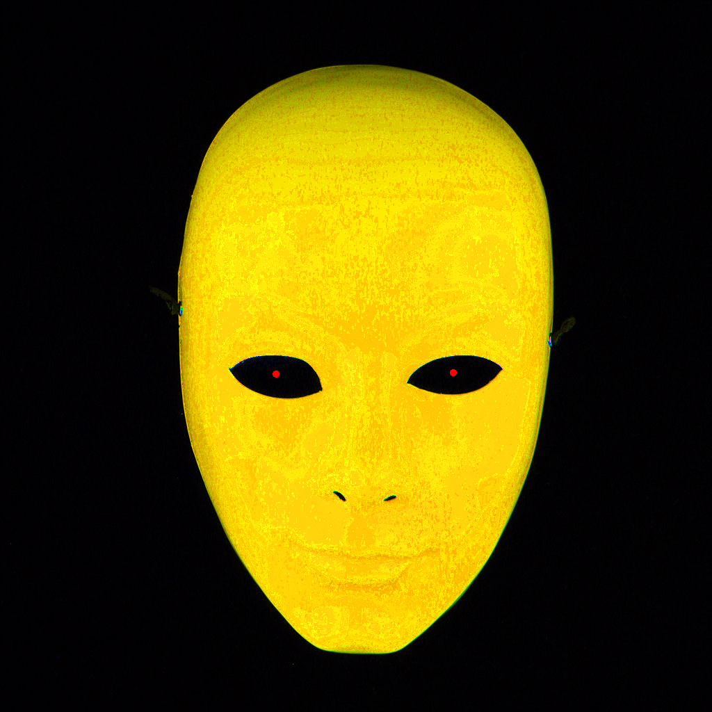
Figure 16: იმრანის ნიღაბი
ვერიდის არკის, ჩებურეკი
მას მერე, რაც ექსპედიტორებმა ინფორმაცია მოიპოვეს გაცისა და გაიმისაგან, ყველა ქალაქში გაიფანტა გზისთვის მოსამარაგებლად. სასტუმროდან გარეთ გასვლისას ყველას ისეთი გრძნობა დაეუფლა, რომ ქალაქი მდიდარი იყო, მაგრამ ამაში რაღაც დიდი სიყალბე იმალებოდა. მანუჩარი მჭედელთან მივიდა აბჯრის საყიდლად, ხოლო ფრეა ფულის შოვნის მიზნით გაეშურა იქვე მსხდომ უსახლკაროებთან. თავისი ახლადნასწავლი შელოცვის გამოყენება უნდოდა, რომ მათთვის თავშესაფარი მიეცა და თან ამით ფული ეშოვა. გამოლაპარაკების მერე აღმოჩნდა, რომ ისინი გაჭირვებული კი არ იყვენ, არამედ სახლი არც უნდოდათ და საერთოდაც გმობდნენ სახლის ქონას. იმედგაცრუებული, უკან გამოვიდა.
ამასობაში სასტუმრო „მარადისში“ მძინარე ნორვემირთან ახლოს მივიდა ჩებურეკი და ყველასთვის უცნობი რაღაც გაურკვეველი გეგმის შესრულება დაიწყო. მწოლიარე ნორვემირს მიუახლოვდა და, როგორც ჰაერის გენასი, ეცადა რომ სხეულის აგრეგატული მდგომარეობა შეეცვალა და კუბოს ღრიჭოებში შემძვრალიყო. რამდენიმე მცდელობის მერე მთლიანი ტანი რაღაც აირად მასად იქცა და წარმატებით გადაკვეთა ზღვარი. იმწამსვე ჩებურეკმა იხილა უკიდეგანო სიწითლე, თითქოსდა ცხელ მომდინარე ლავაში ჩაეყოს თავი. აქეთ-იქით ყურების მერე შეამჩნია, რომ შორს რაღაც ქვის შენობა იდგა. დააპირა თუ არა იქ მისვლა, ეგრევე შესასვლელთან გაჩნდა, თითქოსდა გონების ძალით ტელეპორტაცია მომხდარიყოს. შენობა თითქოს ორსართულიანი იყო, ერთადერთი ფანჯარა იმ მეორე სართულზე იყო გამოკვეთილი. კარი, მის წინ მდგომი, დალუქული იყო, ასე რომ Spider Climb-ის გამოყენებით ფანჯარასთან აძვრა. რომ ავიდა, იგრძნო, რომ ხედავდა მის უკან რაც ხდებოდა, თითქოს მესამე თვალი გახსნოდა კეფაზე. წითელი ზღვა ჩანდა, სანაპიროზე კაცი იჯდა, თითები ჰქონდა ერთმანეთთან მიდებული. ფანჯარაში შევიდა ჩებურეკი. უმალვე იგრძნო, რომ კუბოდან გამოვიდა და რეალობაში დაბრუნდა. მივარდა ნორვემირთან და გაღვიძებას ცდილობდა, მაგრამ იგი არ იძროდა. უკუდავითმა ამოიხრიალა:
„ამ კაცის გაღვიძება არ გინდა…“
ჩებურეკი სასოწარკვეთამ შეიპყრო. სხეული უკვე ნაწილ-ნაწილ ეშლებოდა და ამ ნაწილებს კუბო ისრუტავდა. მისდა საუბედუროდ, ამას უკვე ვეღარაფერი შეაჩერებდა. რომ აღარაფერი დარჩა გენასისგან, უკუდავითმა დასძინა:
„კიდევ ერთი…“
ნორვემირს გაეღვიძა უკუდავითის ხმისაგან. გამოფხიზლებისას მძაფრად იგრძნო ის ავისმომასწავებელი შაშხანი და ტკაცუნი, რაც ამ კუბოს ავსულობის თანმდევი იყო, მაგრამ ჩებურეკის გაუჩინარება არ შეუმჩნევია, ვითარმედ უკუდავითს არა უთქვამს რა.
სასტუმროში; გაცთან და გაიმთან ბაასი
საღამოსკენ ექსპედიციის ყველა წევრი, გარდა ჩებურეკისა, შეიკრიბა „მარადისში“ მეგზურებთან სალაპარაკოდ. ამ უკანასკნელის გაუჩინარება ვერ შეამჩნია ვერავინ ალბათ იმიტომ, რომ ნორვემირის ზურგიდან არჯიტი ჩამოვიდა და ქირაზე კითხვებს თავს არიდებდა.
ჯერ სიტყვით გამოვიდა გაიმი:
„რომ დაუკვირდეთ, აქაურ ხალხს უცნაური მრწამსი აქვს. იმრანი მიაჩნიათ ღმერთად. ვინ არის ეს იმრანი და წინასწარმეტყველი, სასწაულმოქმედი. 70 წლის წინ მოკვდა. ჰგონიათ, რომ მან შექმნა, კონკრეტულად, დაღუპვისგან გადაარჩინა და გარდასახა, ეს სამყარო. მას აგრეთვე «მეზღვაურსაც» ეძახიან და იგი მართლა მეზღვაური იყო, ერთ დიდ გემზე მომსახურე რიგითი. ნიღაბია მისი სიმბოლო, ერთგვაროვანი და ყვითლად შეფერილი.“
შემდგომ გაცმა ჩამოართვა სიტყვა. პირველად უთხრა, რომ უმბრას პირველი ექსპედიციის 6 წევრიდან, მხოლოდ 4-ის გვამი იყო აღმოჩენილი. გაცმა დაამატა:
„უცნაური რა არის იცით, თქვენ აქ გინახავთ მოხუცი ელფი ან ადამიანი? არც ჩვენ. 70 წლის წინ ვინც ცხოვრობდა, ამოწყვიტეს. თვითონ ეს მიწათ განრიდება ფარსია, ნერონ რაზორიც — ბოლო რაზორი — ფარსი ქმნილება იყო. მამამისი, იკარდი, უშვილო გახლდათ. ხალხის თვალის ასახვევად ქანდაკება შექმნა და თავისი შვილი უწოდა. შემდეგ მოიტაცა მდაბიო შეიდი და ცოლად შერთო. ეს «მიწათ განრიდებაც» ამ ქანდაკების გაცოცხლების შედეგია.“
ფრეას უცბად გაახსენდა ერთი ამბავი შეიდის შესახებ:
„1299 წელს, მიწათ განრიდებამდე 9 დღით ადრე, შეიდი გონწასული შეიქნა. 2 დღის შემდეგ გარდაცვლილა. მიზეზი ამისა ალბათ ისაა, რომ მაქამდე 1-2 კვირით ადრე იგი თავისთან ჩავიდა, სოფელში და თან წაიყვანა ფაბიო. იქვე, შუა მოედანზე, სტალმორი გდებულა ტალახში. რომ უკითხავს დედოფალს, ოჯახმა ანტივესიდან გამომაძევაო, უთქვამს. მისულა მასთან და ჩახუტებია. ნათქვამია, რომ ამის მერე იყო რომ ფაბიომ სახე დაკარგა და უსახო მრჩეველი გახდა, ხოლო, შეიდი… შეიძლება სტალმორმა დაწყევლა.“
ამ საუბრის მერე გაირკვა, რომ როშანი, რომელსაც გველადქმნის ანტიდოტი ხელთ ეპყრო, იმრანის სახელობის ტაძრის მღვდელმთავარი ყოფილა. აქედან გამომდინარე, ექსპედიტორები და მეგზურები აღმოსავლეთით უნდა დაძრულიყვნენ.
კათედრისკენ, პარკში იოგა
როგორც გაცი და გაიმი იუწყებოდნენ, იმრანის სახელობის ტაძარი ქალაქიდან სულ რაღაც 15 წუთის სავალზე მდებარეობდა. გარეუბანში შესვლისას თითქმის ყველას ყურადღება მიიქცია ერთმა ბიჭმა, რომელიც დიდ პარკში, შუა ტბაში, იდგა და რაღაც რიტუალს ასრულებდა. ზოგი მისი 190-სანტიმეტრიანი, თეთრთმიანი და მწვანეთვალება ფიგურით მოიხიბლა, ზოგი — სიყმაწვილითა და თავისებური გრაციით. აწ უკვე აყლაყუდა ყმაწვილი ვორასი გავარდა წინ, მანუჩარს დაუძვრა ხელიდან და ტბაში შეცურა. უცნობის დანახვაზე ბიჭმა მას დამბლა დასცა მაგიურად, თუმცა აღმოჩნდა, რომ პირუკუღმა გაუჩერებია და ამის გამო ნელ-ნელა იხრჩობოდა. მიხვდა თუ არა, ბიჭმა თევზების ჯგუფი მიუსია, რათა გადაეტრიალებინათ. ამასობაში ადონი, დაკუნთული, მიფარფატდა მასთან და მოსთხოვა, ხელს ნუ გვიშლი, გაგვატარეო. მცირედი დაძაბული დიალოგის მერე ბიჭმა ყველას თვალწინ ზვიგენის სახე მიიღო, მიცურდა ვორასთან და ნაპირზე გამოიყვანა. კეთილი ნების გამოვლენის გამო ყველა ასე თუ ისე კარგად შეეგება მის გამოჩენას და ადონს თხოვეს, ავიყვანოთო. ადონიც კომპრომისზე წავიდა და ძალზე პირობითად აიყვანა დრუიდი ბიჭი, რომელსაც ერქვა ზულფუ.
ქალაქიდან გასვლისას ზულფუ ყველას მოუყვა თავის ამბავს. თურმე იქ, სადაც იმრანის სახელობის ტაძარი იდგა, ადრე ტომი ცხოვრობდა. მღვდელმთავარი როშანი ტაძრის აშენების მიზნით მისულა და გადაუბუგავს იქაურობა. ჩემი სოფლის ნასახლარზე ქადაგებს ისო, დასძინა.
მძიმე საუბრის ფონზე მანუჩარი ეჩურჩულებოდა ადონს, როდის ჩამოვალთ უკან ქალაქში, სად შემიძლია ეს ბავშვი ვიშვილოო. მეშვიდე ექსპედიციის წევრი მანიაკალურ აჟიტირებას ვერ მალავდა. თხრობის შემდეგ კი ვორასი ეჭიდავებოდა დრუიდს, თითქოსდა მისი უფროსი ძმა ყოფილიყო.
იმრანის კათედრა
მშვიდი საღამო დადგა. ცაზე ვარსკვლავები კიაფობდნენ და მათ შუქს ირეკლავდა გზისპირა ნიშანი, რომელიც ისრით უთითებდა იმრანის კათედრისკენ. დიდებული, ულევი ოქროთი ნაგები შენობის შესასვლელს ორი კარისკაცი იცავდა. ერთს ეძინა. ფრეამ სხვებს არ დააცადა, მიეშურა ფხიზელი ჯარისკაცისკენ და ტესერარიუს მორმანის ნიშანი აჩვენა. მისდა საუბედუროდ, ეს ჟეტონი მხოლოდ ვერიდის არქისში აღმოჩნდა ფასეული და ვერ გამოადგა.
ლამაზი ეზოს უკანა მხარეს მდგომი ოქროსფერი ჭიშკარი ყოფდა კათედრას გარე სამყაროსგან. არემარე სუფთა, სპეტაკად შენახული იყო. მანუჩარის მეთაურობით ყველა ეზოსკენ გაემართა. ტაძარი ახლოდან კიდევ უფრო თვალისმომჭრელად კიაფობდა. მრავალი ჩუქურთმის ფონზე, ჭიშკრის გარდა, თვალს იპყრობდა ეზოში მდგომი ორი ქანდაკება, რომლებსაც იმრანის ნიღაბი ეკეთათ. ფრეა არ დანებებულა, მივიდა ერთ-ერთ ქანდაკებასთან და ხელში დაჭერილი შუბი ჩამოწია. მოოქროვილი ჭიშკარი გაიღო და ტელეპათიურად გაისმა მისალმება.
მანუჩარმა სიფრთხილეს თავი არ სტკივაო და თვითონაც გააბა ტელეპათიური კავშირი ფრეასთან, ნორვემირთან და ზულფუსთან, თან ჩაილაპარაკა, ჩემი შვილიო. შთაგონებული მამობრივი ინსტინქტით, შეიპარა კათედრის შიგნით და ზევით აძვრა. ჩურჩულით უყვებოდა ყველას იქაურობის იერსა და განლაგებას. ფართო დარბაზში ოთხ რიგად ხის ფართო სკამები ყოფილა დადგმული, მეორე და მესამე რიგს შორის — დიდი სივრცე, ადამიანს რომ გაეარა. ფანჯრები მაღალი და ვიწრო, შუშაც არც ისე ჩვეულებრივი, გარე სამყაროსთვის რაღაც იდუმალი ელფერის მიმცემი. მთავარი იქ უზარმაზარი იმრანის ქანდაკება იყო, რომელიც უკანა მხარეს კედელთან იდგა. მანუჩარი მიჩვეული იყო ჯერ დეტალების კირკიტს, შუა ბრძოლის დროს რომ არ ემუხთლა რამეს, ამიტომაც მისი მზერა დიდ ქანდაკებას გვიან მიწვდა. სამაგიეროდ, იმზირა თუ არა მისი წელს ქვემოთ თითქოსდა მოგლეჯილი ფორმა, ხელები ახლოს მიტანილი, თითები, რომლებიც ლამობენ თითქოს ერთმანეთის შეხებას, მთლიანად გლუვი ნიღაბი, მასალის უცნაური სირბილე და თვალებში მობრჭყვიალე უზარმაზარი ლალის ქვები, შეკრთა. ნაბიჯს ვერ დგამდა. ეზოში დარჩენილები მიხვდნენ, რომ ამ შემოქმედებაში რაღაც მზაკვრული ერია. მანუჩარის ცნობისმოყვარეობამ შიშს წამით ძლია და ახალი შემართება მისცა. ეზოდან მოტანილი ტოტი, რომელიც ამდენი ხანი ხელში ეჭირა, ისროლა ქვევით. არაფერი მომხდარა. ცხადად ჩანდა, რომ გარედან ნანახი უზარმაზარი შენობის კვალობაზე ეს დარბაზი პატარა იყო. ამ საკითხზე დაფიქრებულმა მანუჩარმა კიდევ ერთხელ გადახედა იქაურობას და, თითქოს ცხვირწინ დაგდებული ლოდი ეპოვოს, კედელში დიდი ხვრელი შეამჩნია. ხვრელი რა, ეს უფრო გვირაბი იყო, რომელიც თანდათან უფრო ვიწროვდებოდა. კარგად შემალული კი არისო, დასძინა ტელეპათიურად.
ნორვემირს, რომელიც ეზოში წრიალებდა, მოთმინების ფიალა აევსო. რას ჩამოდექით აქ, რას ელოდებითო, დაიღრიალა. არავინ იყო უცხო შენობაში შევარდნის ხასიათზე, თითქოსდა ამდენმა ოქრომ და ძვირფასეულობამაც იმოქმედა. მიხვდა თუ არა ბარბაროსი, რომ პასიურობა სუფევდა იქ, ამოიოხრა და თვითონ შეაღო კარი. შიგნით, მანუჩარის გარდა, არავინ დახვედრია. მიმოიხედა და იგივენაირი ხვრელები კედელში ქვევითაც დაინახა.
დარწმუნდა თუ არა ყველა, რომ შიგნით არ იყო საფრთხე, ნელ-ნელა კათედრისკენ დაიწყეს სვლა. ფრეა რატომღაც განსაკუთრებით ფრთხილობდა: ჯერ მაგიური აბჯარი დაისახა, შემდეგ კი ნაჭერი თვალებზე მოიხვია, ნორვემირამდე მიბაცბაცდა და სთხოვა, გამიძეხი წინო.
მკურნალი მღვდელი
მას მერე, რაც ყველა კათედრაში შევიდა, უკნიდან ნაბიჯების ხმა გაისმა. გამოვიდა ტანადი მამაკაცი, რომლის ლურჯ ანაფორას ოქროსფერი ღილები ამშვენებდნენ. კეთილად მიეგება სტუმრებს. „დღეს წირვა არ გვაქვს, თუმცა აქ ყველა სახის ადამიანსა და თუ სხვა რასებს მოგესალმებით.“ ყველამ იგი იცნო, მაგრამ როშანმა მაინც წარადგინა თავი. მისი სიტყვების მოსმენისას, ფრეას მომენტალურად აზრი გაუჩნდა და ნორვემირს რაღაც ჩაჩურჩულა. მორჩა რა მღვდელმთავარი ლაპარაკს, ნორვემირი და თვალახვეული ფრეა წინ წაიწივნენ. გოგონა თავჩაქინდრული იდგა, დამორცხვილი თითქოს, თან ცდილობდა, რაც შეიძლებოდა დამაჯერებლად ეთამაშა ბრმის როლი. ნორვემირი მიუბრუნდა მღვდელს და უთხრა, ეს გოგო დაბრმავებულია და თქვენი მკურნალობა სჭირდებაო. ფრეამაც უმწეო ხმით თხოვა, მიშველეთ, აღმიხილეთ თვალიო და თან უფრო ახლოს მივიდა. როშანი შეცბა თითქოს და ის კეთილი აურა, რომლის შენარჩუნებასაც ცდილობდა, წაეშალა სახიდან. მაგრამ მაინც, აწია თუ არა ფრეამ ხელი, ნორვემირმა უკნიდან ახალგამოჩენილ სივრცეში აძგირა თავისი დიადი ხმალი და დაჭრა მღვდელი. ბრძოლა დაიწყო.
ბრძოლა
სცა თუ არა ბარბაროსმა მღვდელს მახვილი, არჯიტი მივარდა და შეეჭიდა. ნორვემირს გაკვირვებისგან ყვირილი აღმოხდა, რას შვრებიო, მაგრამ, სასწაულებრივად, მზირმა ძლია მღვდელმთავარს და იგი თავის მკლავებში მოაქცია. შებოჭილს სხვა გზა არ ჰქონდა და გაიმისგან მაგიური შეტევის (ფერადი სფეროს) მიღება მოუწია. არახელსაყრელი სიტუაციიდან გამოსავალი თითქოს არ ჩანდა, მაგრამ როშანი ბოლოს და ბოლოს დრაკონი იყო და თავის ნამდვილ ფორმად გარდასახვამ ყველა პრობლემა მოაგვარა.
იმდენად გაიზარდა როშანის სხეული, რომ არჯიტს სხვა გზა არ ჰქონდა, გარდა იმისა, რომ გაეშვა. დრაკონი ჯერ გამოიწია ყველასგან, შემდეგ ჰაერში აფრინდა, ბოლოს კი თავისი სუნთქვა ჩართო და ზედ დააყარა ყველას. გაცმა თავი ვერ დაიცვა და გონებაწასული დავარდა. ფრეამ, სამაგიეროს გადახდის მიზნით, მიწა აყარა და უზარმაზარი ლოდები, მაღლა ამოსული, დასცა თავზე. დაინახა თუ არა არჯიტმა, რომ დრაკონი წამით შეცბა, მივარდა მასთან და ზედ აახტა. მეორე მხრიდან კი ნორვემირმა ხელებზე მობმული ჯაჭვები გაშალა და დრაკონს ესროლა შესაბმელად. მისდა სამწუხაროდ, დრაკონი იმაზე უფრო ძლიერი აღმოჩნდა, ვიდრე ეგონა და ჯაჭვებიდან გამოძვრა. გამწარებული, ბარბაროსი არჯიტისნაირად ახტა და ზედ ააძვრა.
ფრეას ბრძოლის დასაწყისიდან მოხსნილი ჰქონდა თვალზე ასაფარებელი, მაგრამ თავისი გეგმა ბოლომდე ვერ გათვალა და არჯიტ-ნორვემირის აკრობატული ნომრის მერე გადაადგილებისას მზერა შეეფეთა უკან მდგომ უზარმაზარ ქანდაკებასთან. მასაც იმავენაირმა ჟრუანტელმა დაუარა მთელ სხეულში და მანუჩარივით ადგილზე გაიყინა. გაიმმა რაღაც სერიოზული შელოცვა წაიკითხა, მაგრამ უმაოდ. ნახა რა როშანმა, რომ ჯადოქრებისგან საფრთხე არ იყო მოსალოდნელი, ძირს დაეშვა ზურგზე მოჭიდებული არჯიტისა და ნორვემირის მოსაშორებლად.
ჯდებოდა რა დრაკონი ძირს, მანუჩარმა თვალი მოკრა იქვე მყოფ ხვრელს კედელში. ცნობისმოყვარეობამ მაინც ძლია და შიგნით შევიდა. ვიწრო კედელს შეეფეთა თუ არა, სხეულზე სისველე იგრძნო. გამოვიდა გარეთ, დაიხედა და დაინახა სიშავე. ნავთში ამოსვრილ მზირს დრაკონის ერთ ამოსუნქვაზე ცეცხლი წაეკიდა. თავისი საამაყო ოქროსფერი გრძელი თმა სულმთლად დაეწვა, ისევე როგორც ტანსაცმელი, რომელიც სასწრაფოდ გაიხადა.
ამასობაში დრაკონს ძირს დახვდნენ. ფრეამ დიდი ელვა ესროლა, რომელიც პერიოდულად მიაყენებდა ზიანს, ზულფუმ ორთქლის მეფიტები გამოიძახა, ხოლო ნორვემირმა ორდონიანი შეტევა განახორციელა. ჯერ კიდევ ზედ მომჯდარი, თავისი Artifice ხმლით კისერში გლიჯა, შემდეგ კი ადონს გააქტიურებინა CUBIC CONCILIUM WRATH: ცამეტმა საბჭოს წევრმა რაინდმა დრაკონს ცამეტჯერ მიაყენა ზიანი, რომლის შედეგადაც მან სერიოზული ჭრილობა მიიღო. ამას ზედ დაემატა მეფიტების აფეთქება, რამაც პატარ-პატარა ბასრი ნაწილაკები შეარჭო. გაციც, ახალგაცოცხლებული, ადგა.
დრაკონი და მებრძოლები ძალასა და მანას არ იშურებდნენ ერთმანეთის ამოსახოცად. თანაბარი იყო თითქოს მათი ძალა, მაგრამ ჯადოქრებს ისევ უმუხთლათ ბედმა და საპირწონემ როშანისკენ გადაიწია. დრაკონმა ისარგებლა სიტუაციით და ჯერ ზურგიდან ჩამოყარა თავისი ორი სტუმარი, შემდეგ კი მეომარ ვორასთან მივიდა. საუბედუროდ, ვორასმა ვერ გაუწია წინააღმდეგობა. დაუნდობელი შეტევის შედეგად, ძირს დაეცა. ყველას თვალწინ საოცარი სანახაობა გადაიშალა: თინეიჯერი ვორასი თვალის დახამხამებაში გაიზარდა, ჯერ 20 წლის, მერე 25-ის, 30-ის, 45-ის, 50-ის, 70-ის… ბოლოს სულ დანაოჭდა და წამოიხრიალა:
„ბოდიში, მამა“
რის შემდეგადაც სული განუტევა. სხეული, უკვე დეფორმირებული, გაილია და მტვრად იქცა.
წამიერი შოკის სასოწარკვეთილებამ მეტად იმატა, რაც დრაკონი ნორვემირს მივარდა და უკბინა. გამწარებულმა ბარბაროსმა არ შეიმჩნია, თითქოსდა თავისი ტოტემი ამისგანაც იცავდა. გაცმა აამოქმედა თავისი ერთ-ერთი უძლიერესი შელოცვა, რომლითაც დრაკონს უბრძანა, ჩამოდი და გაწექი ნორვემირის წინო. იგი დაემორჩილა ბრძანებას. ფრეა, რომელმაც ერთადერთი კავშირი თავის ძველ სამყაროსთან დაკარგა, გამწარებული გამოვარდა და უზარმაზარი ცეცხლის ბურთულა ესროლა როშანს, რის შედეგადაც დასუსტებული, მაგრამ მედგრად მდგომი დრაკონი საბოლოოდ დაეცა.
ხილვა
როშანის სხეულს ცეცხლი წაეკიდა, ოღონდ რაღაც სხვანაირი. არა ის ალი, რომელმაც იგი ამოწვა, არამედ რაღაც სხვა, მათრობელა, რომელმაც ყველა მისი მომზირალი მონუსხა. წითელი ზღვა ესახებოდათ თვალწინ მებრძოლებს. ფსკერზე იმრანის ქანდაკება იყო ქვიშაში ჩარჭობილი, ისეთივე, როგორიც კათედრაში მდგომი, ოღონდ ამას ხელები მიბჯენილი ჰქონდა და კაშკაშად, თეთრად ანათებდა. სანაპიროც იხილეს. ღელავდა ზღვა. შავებში ჩაცმული, ფერმკრთალი კაცი იჯდა, რომელსაც თმა მხრებამდე წვდებოდა. ლოცულობდა, ხელები ქანდაკებასავით მიბჯენილი ჰქონდა. ქამარზე მობმული ჰქონდა ტყავის წიგნი, რომელიც ფრეამ იცნო, როგორც შელოცვების წიგნაკი. სახე ვერავინ დაინახა.
ყველა გამოფხიზლდა. იმრანის ქანდაკების ძირში ახლადამოსულ ალტარზე გრაგნილი იდო, რომელსაც ზედ ეწერა „გველადქმნის ანტიდოტის რეცეპტი“. გარდა ამისა, ნაპოვნი იქნა:
- Manual of Golems
- Robe of Stars
- Tome of Understanding
- Helm of Brilliance
- Arrow of Slaying
- Dwarven Plate
- წითელი ზღვის ილუსტრაცია
- სტალმეერის იმპერიის ისტორიის წიგნი
- იმრაანის ჩანაწერი
- 1500 ოქრო
გველადქმნის წამალი გაცმა აიღო. განაცხადა, ამას წავიღებ ბნელ დაბლობში და არმიით ამოვალო.
შემდეგი გაჩერება — წითელი ზღვა.
იმრანის ჩანაწერი
„განრიდება მიწისაგან ადამიანისა
იმპერატორ იკარდის არა ჰყავდა შვილი, არამედ მხოლოდ წადილი უბადრუკი.
ბუნება მისი — უთვისტომო, ჭირვეული და მოწამლული —
არა უქადდა სიხარულს ამ ქვეყანაზედ. გიჟმა მოხუცმა ამან,
ძალა არ დაიშურა, და შექმნა
ძე საკუთარი, უნაკლო და უმანკო,
შავი რკინისა და ოქროს შენადნობი,
შეუპოვარი რაინდი.
ნერონ დაარქვა, და შესჭვრიტა თვალთ, რამეთუ უსულოსგან მოელოდა რასმეს, მოხუცი გიჟი.
ნერონ, მაგალითი სახალხო,
მებრძოლი და გულადი,
გამზრდელს უცოლოდ არ დაუტოვებია,
რამეთუ მოიტაცა პატიოსანი, მდაბიო შეიდ, მიწურიდან საიდანმე.
წამებული „მდაბიო“ შეიდ აღემატა რაზორთა მოდგმას.
წოდება, და სიყვარული შესძინა მამამ ძეს, მაგრამ გული, სული ვეღარ უშოვნია მისთვის.
სტალმორ ეშმაკი გამოჩნდა მაშ,
ხელი მისი გრძელია, და ბასრიც.“
— იმრან, 1299.
სესია 10 (კვირა, 17 ივლისი, 2022) - უმბრა VI, წითელი ზღვა
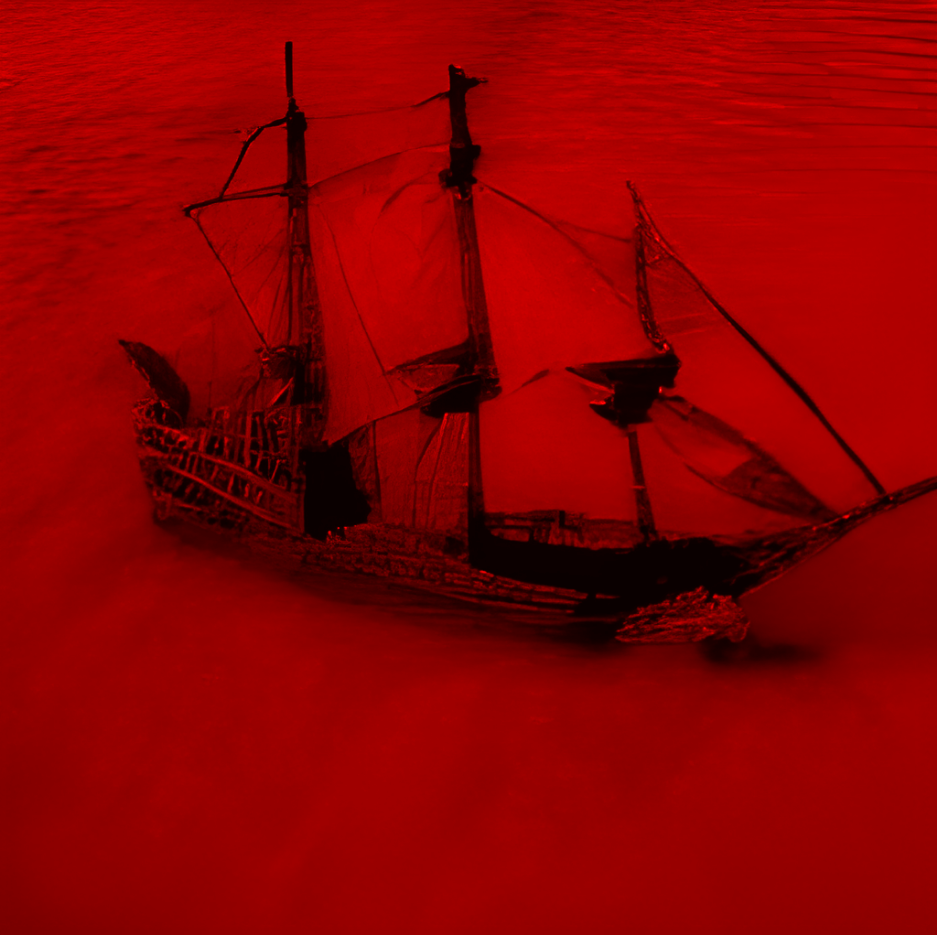
Figure 17: იდუმალი გემი წითელ ზღვაში
გამოძიება და მზიანი დღე
იმრანის კათედრის დიდ დარბაზში გამაყრუებელი სიჩუმე ჩამოწვა. როშანი — დრაკონი, რომელსაც ხელთ ეპყრო გველადქმნის ანტიდოტი — დამარცხებულიყო, მისი გვამი მაგიური ცეცხლით დამწვარიყო. ექსპედიტორებს ეს გამარჯვება ძვირად დაუჯდათ. აზრზე მოვიდნენ თუ არა გამაბრუებელი ილუზიის მერე, ერთხმად მიაპყრეს მზერა ადგილს, სადაც სულ რაღაც რამდენიმე წუთის წინ სიკვდილთან მებრძოლი, თავიდან გაცოცხლებული ლიმინელი მეომარი იდგა. ვორასისგან ერთი შეხედვით არაფერი დარჩენილიყო, არც ის მტვერი, რომლადაც მისი სხეული იქცა, მაგრამ ნორვემირმა მაინც იპოვა რაღაც ერთი. თვალის სახვევი შემორჩენილიყო თურმე. უკუდავითს გაუკეთა და მანაც თავისებური ნახლეჩი ხმით წამოთქვა: „ვორას“.
ფრეა და ზულფუ ჯერ კიდევ ვერ გამორკვეულიყვნენ ბოლომდე და დავმარხოთო იძახდნენ. როცა ხილვის ბინდი ბოლომდე გადავიდა, ყველამ მძაფრად იგრძნო, რომ თანამებრძოლის დაკარგვა გულში ჩარჩა, როგორც დაუვიწყებელი ხინჯი. სამწუხაროდ თუ საბედნიეროდ, გლოვის დრო არ იყო. გარდა ანტიდოტისა, კათედრა ბევრ საიდუმლოს ინახავდა და არც ადონს და არც ექსპედიტორებს არ უნდოდათ ამ ადგილის გამოუძიებლად დატოვება. ფრეას ინიციატივით, ყველანი შეთანხმდნენ, რომ ცალ-ცალკე დაივლიდნენ იქაურობას და დარბაზში შეხვდებოდნენ ერთმანეთს.
ასე კი თქვეს, მაგრამ ჯგუფს მარტო ზულფუ გამოეყო, რომელმაც ეზოში რაღაც გუბე შეამჩნია. სანამ როშანის კაბინეტი ხალხით ივსებოდა, დრუიდმა ზღვის ცხენის ფორმა მიიღო და ჩაყვინთა ფსკერზე. ბოთლი იპოვა, რომელსაც ზედ ეწერა „თაგვის წამალი“ და ჩაიჯიბა. კაბინეტში შესვლამდე, ნორვემირმა არჯიტს ფული თხოვა. ჩემს ზურგზე კარგად იყავი და ახლა ქირა მინდაო.
ფრეას ყურადღება მიიქცია ნახატმა, რომელიც კაბინეტის კედელს ამშვენებდა. ეს იყო გემის პორტრეტი, თუ შეიძლება ასე ითქვას. კამკამა წყლის ფონზე ხომალდი უზარმაზარი ჩანდა. ჰგავდა იმ გემს, შეიდის ქანდაკებამ რომ აჩვენა ხილვაში, მაგრამ ახალივით იყო. რომ მივიდა ახლოს, შეამჩნია, რომ ცხვირზე რაღაც ეწერა წვრილად: „M.K.“ შემოტრიალდა და ნორვემირისა და არჯიტის დანახვაზე წამით შეცბა. ბარბაროსს ეს არ შეუმჩნევია, რადგან თვითონაც უყურებდა გემს, მისით თითქოს შეპყრობილი. გაახსენდა ძალიან მკაფიოდ, თუ როგორ იდგა მასზე: იატაკის ფიცრების ჭრაჭუნი და სიმყარე, რყევა, ზღვის სუნი და ქარი. აქ ნამყოფი ვარო, წამოიძახა. ფრეამ წარბი აწია. არ ეჯერა, მაგრამ უცბად მიხვდა, რომ კუბომოკიდებული კაცი, რომელსაც მოუკვდავი უკუდავითი უკეთია ზურგზე, შეიძლებოდა ამ რაღაც იდუმალ გემზეც ყოფილიყო ნამყოფი. არჯიტმა თვალი შეავლო რამდენჯერმე და გაახსენდა. ეს სტალმეერის იმპერიული გემი არისო, თქვა. მიწათ განრიდებამდე ასეთები ჰყავდათო. ფრეას რაღაც გაახსენდა. ფრთხილად ჩამოიღო ნახატი კედლიდან, შემოაბრუნა და უკანა მხარეს დააკვირდა. ჩარჩოზე ეწერა: „M.K-ს პირველი გასვლა. 1300.“
უჩუმრად შემოფარფატებულმა ადონმა, რომელიც ამ ყველაფერს აკვირდებოდა, რაღაც იცნო ამ თარიღში. მისმინეთო, მიმართა ყველას და თქვა:
„იკარდი რაზორი პარანოიით იყო შეპყრობილი. თავისი ვითომდა შვილი — ნერონი — პირველი ლიმინური გოლემი უნდა ყოფილიყო და ასეთ საქმეში ლიმინელებს მაინც ვერ ენდობოდა. ბოლო დღეებში დატოვა თავისი მიწა და გემით გაემგზავრა ღვთისხელში… მაგრამ მივიდა იქ თუ არა, არავინ იცის. ხალხი ისედაც ამბობდა, კონტრაქტი აქვს მეფეს ღვთისხელთანო.“
ნორვემირმა დასძინა, მიწათ განრიდების საიდუმლო აქ არისო და კუბოსკენ გაიშვირა თითი.
მონათხრობზე ფიქრი დაიწყო თუ არა ყველამ, დარბაზიდან კაკუნი გაისმა. შემოსასვლელი კარი ძლივს გაიღო და შემოლასლასდა უცნობი კაცი. ტანზე თოკ-ბაწარი ჰქონდა შემოხვეული და დაფლეთილი მოსასხამი ეცვა. სახეზე ნიღაბი ეკეთა, რომელიც თითქოს მინიატურული მოკაშკაშე მზე იყო. შესამჩნევად გალეული და დასუსტებული იყო, მაგრამ თან ეტყობოდა, ერთ დროს ძლიერი ვინმე უნდა ყოფილიყო. მივიდა ექსპედიტორებთან და დიდი მოწიწებით გაეცნო, როგორც მეშვიდე ექსპედიციის წევრი ლუდვიგ რაისი. ნორვემირს ისედაც არ უყვარდა პომპეზურობა და ამ უცნობის ნომერმა განსაკუთრებით გააღიზიანა. მით უმეტეს, რომ ზურგზე მოკიდებულმა მანუჩარმა ხვნეშა დაიწყო მისი ხმის გაგონებისას. ასე რომ წინ დაუდგა. რაისმაც არ დააკლო. მზის ენერგია მაქვსო, შესძახა, მაგრამ მიედო თუ არა ნორვემირისგან ხელი, მოწყდა და ძირს დავარდა გათიშული. დააკვირდა ბარბაროსი. ცარიელი ძვლებიაო, გაიფიქრა. შეეცოდა და ისიც ზურგზე მოისვა.
რაისის განეიტრალების შემდეგ, ყველამ თავიდან დაიარა კათედრა, გარდა ფრეასი, რომელმაც დაიწყო თავისი საყვარელი რიტუალის შესრულება. ათი წუთის შემდეგ ახალშესულებმა გაუმჭვირვალე გუმბათში დასასვენებლად მზადება დაიწყეს თუ არა, თავი შემოყო გაიმმა. ამბავი უნდა მოგიყვეთო. ფრეას ცოტათი ეუცნაურა, მაგრამ მაინც შემოუშვა.
ბაასი გუმბათის ქვეშ
მოკალათებულმა გაიმმა დაიწყო თხრობა:
„მოკლედ ასეა ეს ამბავი: მე და გაცი აქ 70 წელია რაც ვართ, რადგან პირველი ექსპედიციის წევრები გახლავართ. როგორც ჩვენ, აგრეთვე რომულუსი და ბატონი სისსე…“
ამის თქმა და ნორვემირისა და არჯიტის შეფაცურება ერთი იყო. პირი გააღო ბარბაროსმა, მაგრამ არჯიტმა ეგრევე წააფარა ხელი, არაფერი ათქმევინა. ყველა იმწამსვე მიხვდა, რომ ამ ორისთვის სისსეს ნაცნობობა არ უნდა გაენდოთ.
გაიმმა გააგრძელა:
„კორველისგან მივიღეთ პირველ ექსპედიციაზე მოწვევა. ნაყოფიერ მიწას დაგვპირდა დირჰაიმის ტერიტორიაზე როგორც ჯილდოს და ჩვენც დავუჯერეთ, რადგან ღარიბნი ვიყავით. ამ ოთხკაციან შეკრებას კორველმა უწოდა «პირველი ექსპედიცია უმბრაში». განა თვითონ გვითხრა, გზაში გვახვედრებდა უსახურ ხალხს, ყოველ ჯერზე სხვადასხვას.
თავიდან ეტლით წავედით აჩრდილეთისკენ, მერე კი იქიდან გადავედით უმბრაში. იქ, დედაქალაქ გეოფრონტში, სისსე და რომულუსი დაგვხვდნენ, კორველისგან დაბარებულნი ვართო. ასე თუ ისე შევიკარით ერთ გუნდად და სისსეს გემით გავემგზავრეთ ჩრდილოეთით, ყინულებში. ახლაც მახსოვს, როგორ ეწერა გემის ცხვირზე ოქროსფრად «M.K». ასე მივდიოდით, მივცურავდით, სანამ თაღის ფორმის უზარმაზარ აისბერგს შევხვდებოდით. ერთი მომენტი ძალიან ცუდად გავხდი, იატაკი ისეთი მრუდე და დრეკადი გახდა, სადაც იყო გასკდებოდა თითქოს და თან ჩამიყოლებდა. ცოტა ხანში კი იმ აისბერგის პორტალი ამოქმედდა და უმბრაში აღმოვჩნდით დასავლეთ მხარეს, ქალაქ არმასთან.
საბოლოოდ მახე აღმოჩნდა ეს პირველი ექსპედიცია. მიწაზე ფეხი დავდგით თუ არა, მოგვიტრიალდა სისსე და შემოგვიტია. გაქცევა ვარჩიეთ. მე და გაცი ვერიდის არქისისკენ წავედით, რომულუსი — ანტივესისკენ. ამის კვალობაზე, მინდა ყურადღება მიაქციოთ, რომ არცერთი ექსპედიცია ისე შორს არ წასულა, როგორც თქვენ. თანაც მხოლოდ პირველი, მეშვიდე და მერვე ექსპედიციის ხალხი თუღა შემორჩა ცოცხალი.
და კიდევ. სისსე ადამიანი არაა. დემონჰაიმელი დემონია.“
ექსპედიტორებისთვის სისსეს ვინაობის გაგება სიახლე იყო, მაგრამ სახეზე არ დატყობიათ არც გაკვირვება და არც არაფერი სხვა. ყველა ერთხმად გასუსულიყო. ფრეაც ჩაფიქრებულიყო, ადარებდა გაიმის მონაყოლსა და თავის წაკითხულს. როგორც გაახსენდა, „ღვთისხელის ისტორიის“ ერთ-ერთ ტომში ეწერა, რომ კორველს უნდოდა სტალმეერის მიწა აეთვისებინა და ამაზე ბალასარ მანტაართან კონფლიქტი მოუვიდა, მაგრამ „ეს კონფლიქტი მოგვარდა“. რა და როგორ, მიმალული იყო აუხსნელი თვალთმაქცობის უკან.
აღმოსავლეთისკენ გზა
გათენდა თუ არა, გაუმჭვირვალე გუმბათში კათედრის ფერადი ფანჯრების გავლით სხივებმა შემოაღწიეს. მზის დიდებული, თუმცაღა მაინც მცირედი საჩუქარი შეიგრძნო თუ არა კანზე რაისმა, მოუხელთებელი ჯადოქრის მიერ გამოძახებული მეფიტივით დაიწყო ფართხალი. ახალგამოფხიზლებული, ფეხზე წამოვარდა და გაფაციცებულმა დაიწყო აქეთ-იქით ყურება. ექსპედიტორებს ეჩქარებოდათ გზის გაგრძელება და დიდხანს აღარ დააყოვნეს გასვლა, სამაგიეროდ მოტრფიალე რაისის აჟიტირება ახალ და ახალ სიმაღლეებს აღწევდა თითო გავლილი ნაბიჯის შემდგომ. თვითონაც ბოლომდე ვერ ხვდებოდა, ეს ესოდენ იშვიათი დარის გამო იყო თუ უბრალოდ შთაბეჭდილების დატოვება უნდოდა ექსპედიტორებზე, მაგრამ მის მიერ წარმოთქმული თითოეული სიტყვა მზის ერთგვარი ხოტბა გახლდათ, ოღონდ არა მზეური.
ამასობაში ტექტონიკური წრედი თვალს მიეფარა. რაღაც დროის შემდეგ ჩრდილოეთის მხარეს სხვა ხედი გადაიშალა, რომელიც თითქოსდა ლამობდა უფრო თვალწარმტაცი ყოფილიყო, ვიდრე უკან მოტოვებული არქიტექტურული საოცრება. უზარმაზარი ხე იყო ამოზრდილი მიწიდან ცაში. იმხელა, რომ თითქოს მაკავშირებელი იყო ზეცასა და დედამიწას შორის. თვალს ვერ აშორებდნენ ისინი, ვინც პირველად ხედავდნენ; სხვებიც უყურებდნენ, თითქოსდა იზიარებდნენ პირველ შთაბეჭდილებას.
გაიმმა ხისკენ მიანიშნა და დასძინა:
„ეს არის დომინიონ კოსმიკუს. პირველად 1301 წელს აღმოვაჩინეთ. მართალია არ ჩანს, მაგრამ აი იქ, ხის ტოტებზე, ქალაქია. როგორც ამბობენ, ანტივესამდე ერთადერთი მისასვლელი გზა არისო.“
რაც შორს მიდიოდნენ ექსპედიტორები, მით უფრო ხასხასა და ბიბინა ხდებოდა არემარე. ბალახი, დაბლად ამოზრდილი, პატარა გორაკებს მწვანედ ამშვენებდა. მოშორებით გამოჩნდა ტბა, რომლისკენაც ბილიკი მიდიოდა. შუა გზაზე ძველი შენობა იდგა, რომელიც სანატორიუმს ჰგავდა. მიტოვებულის იერი ჰქონდა. კამკამაწყლიანი ტბის პირას ჩამუხლულიყო ვიღაც უცნობი.
სანამ ყველა ბილიკზე დაეშვებოდა, რაისის მონოლოგმა პიკს მიაღწია. ნორვემირისგან შთაგონებული, იგი დაწვრილებით ხსნიდა მზის ძალასა და სასიცოცხლო ენერგიას, თანაც აიგივებდა ფალოსთან და მის სიცოცხლისმიმცემ ძალასთან. ირონიული გამოდგა მისი ეს გამოსვლა, რადგან ტბის პირას უცნობი კი არა, ქარონი ჩამუხლულიყო.
ფრეამ იცნო რა თავისიანი, მსწრაფლ გაეშურა ქვევით. საშინელება ეტყობოდა ზედ მერვე ექსპედიციის ერთ-ერთ პირველ წევრს. კისრის გარშემო უზარმაზარი ნაკერი, თვალები მთლიანად ახვეული, კაკლების ადგილას ორი დიდი სისხლიანი ლაქა… ისედაც გაფითრებული იერი უკვე ფერწასულად ქცეულიყო და გვემამოსილი ჯდომის წესთან ერთად მთლად ასაცოდავებდა მკვრად გაცოცხლებულს. ვინ დაგმართა ესო, ჰკითხა ფრეამ.
„სტალმორმა. თავის მოცლა რომ სიკვდილს უდრიდეს, ძალიან ბედნიერი ვიქნებოდი“ — უპასუხა.
ფრეასა და ნორვემირს ჯერ წესიერად არ ჰქონდათ დაწყებული ქარონთან საუბარი, რომ უკნიდან შემაძრწუნებელი ნელი ტაში გაისმა.
„არ მიკვირს რომ ცოცხალი ხარ, ნორვემირ. რადგან მომგებიანია, მაგიტომ ხარ აქ“ — გამოვიდა სისსე — „ეს თქვენი გზის ბოლოა“. უკან მოყვა ოთხი ქრომი და ორი ადამიანი, ანაფორაში შემოსილი. სიკვდილის მომასწავებელი ავი ვერცხლისფერი ქრომების დანახვა ერთი იყო და მეორე ფრეას შეძახილი:
„დიდ შარში ვართ! ესენი თუ ახლოს მოვუშვით, ბატონი არქმაგუს პლუტარქე ადონის ეთერეალური კავშირის გაწყვეტა შეუძლიათ!“
ამ შემართებით ბრძოლა დაიწყო.
ბრძოლა ტბის პირას
სისსეს ბრძანებით, ქრომთა ოთხეული გაიშალა და აგრესიულად წაიწია წინ. ფრეამ პოზიციური უპირატესობა დაკარგა და მწარედაც მოხვდა. უარესი ის იყო, რომ მათი დარტყმა აზიანებდა როგორც სხულს, ასევე გონებას. მიხვდა ამას თუ არა, ნორვემირს მსწრაფლ გასძახა, რადგან იცოდა, რომ ასეთი სახის ზიანი მისი სუსტი წერტილი იყო. მიუხედავად ექსპედიტორების მცდელობისა, გაშლილიყვნენ, სისსეს ტაქტიკამ შედეგი გამოიღო. ერთი თავზეხელაღებული ქრომი ისე გავარდა, რომ სამმა კაცმა ზურგში ხმალი ჩასცა, მაგრამ მაინც, იმ თანამექრომემ, რომელიც მარცხნიდან მესამე ადგილას იდგა ბრძოლის დასაწყისში, ხმალი მოიქნია და რაღაცას მოახვედრა შუა ჰაერში. წამით ყველას სუნთქვა შეეკრა. საუბედუროდ, განაჩენი გამართლდა. წყვეტის ხმა გაისმა. მოატრიალა მოქნეული ხმალი იღბლიანმა ქრომმა და კრისტალური თავი მოკვეთა ადონის პროექციას. დავარდა მძიმე სხეული.
სისსემ გადაწყვიტა, მეთაურის გარეშე დარჩენილი გუნდისთვის კიდევ დაეჭირა ზევიდან. წინ დადგა, გაიჭიმა და გაიბერა კუნთები, რომლებმაც არაბუნებრივად მოწითალო ფერი მიიღეს. „ქარონ, მოდი ვაჩვენოთ ამ ადამიანებს როგორ გამოიყურება აქაურობა სინამდვილეში!“ — შესძახა.
პეიზაჟი, რომელიც ძალისა და შთაგონების წყარო იყო ყველასთვის (განსაკუთრებით რაისისთვის), მიილია და მის ადგილას აღმოცენდა ის მკვდარი სიწითლე, რომელსაც მანდარინის ინსტიტუტი ავრცელებდა მთელ მიწაზე. წყალმა გაამხილა თავისი ვინაობა და ექსპედიტორებს ეჩვენა, როგორც წითელი ზღვა. ისედაც მოძველებული და მიტოვებული სანატორიუმი თითქმის მთლიანად ჩამონგრეული აღმოჩნდა. ზღვაში გამოჩნდა „მკვლელი“, რომელიც ნორვემირმა იცნო. თან მიხვდა, რომ შეიდის ქანდაკების მიერ ნაჩვენებ ხილვაში სწორედ სისსეს ხომალდი ფიგურირებდა თურმე.
ამ ყველაფრის მიუხედავად, ექსპედიტორების შემართება არ გატყდა. სისსემ ვერ შეაფასა ის, რომ ასეთი სიტუაცია მათ უკვე რამდენჯერმე ჰქონდათ გამოვლილი. ჯერ გამოვიდა ზულფუ, რომელმაც აამოქმედა ტაქტიკური ფორმაცვლილება, ლორწოვან კუბიკად მოევლინა საბრძოლო ველს, მივარდა ერთ-ერთ ანაფორიანთან და ჩაყლაპა. მერე კი ნორვემირი, რისხვით შეპყრობილი, გამოიწია წინ, გადახტა სისსესთან და ზედ დაახალა რაც შეეძლო. ჯერ ხმლით, შემდეგ — შემუსვრის ისრით დაუნდობლად განახორციელა შეტევა. მისდა მოულოდნელად, სისსე არ განძრეულა. სანამ სხვები ქრომებს უტევდნენ, მტვერი მოიწმინდა და გემისკენ გაემართა, რომლის ბაქანზე რაღაც სალოცავი ებრძანა. ფრეა და სხვები კი მიხვდნენ, რომ რაღაც ცუდი უნდა მომხდარიყო, მაგრამ, ქრომებისგან შებოჭილი, ვერაფერს გახდნენ. კაპიტანმა რაღაც სასწაულებრივი ჩართო. თავისი სხეულიდან მთელ სანაპიროზე გაავრცელა ათასფერი სინათლე, რომელმაც ჯერ მოიცვა იქ მყოფნი, შემდეგ კი შეიკუმშა და აფეთქდა, თითქოსდა რამდენიმე კასრი დენთი დაეტანებინოს ზედ. მწარედ მომღიმარმა ბაქანზე ამოვარდნილ ბარბაროსს ბაასი გაუბა:
„აირჩიე, ნორვემირ. ყველაზე მომგებიანია, რომ აქ ვიღაც მოკვდეს და ეს ასეც მოხდება. ასე რომ გთხოვ.“
ბევრი არ უფიქრია ბარბაროსს. უკუდავითისგან ბოძებული კამათლით გადაწყვიტა, რომ იქვე მდგომი არჯიტისკენ გაეშვირა თითი. ამის დანახვაზე სახე მოეღრიცა სისსეს. ნიშანი მისცა და ციდან დაეშვა სამი უზარმაზარი ისარი, რომლებმაც გააპეს მზირის ორი ხელი და თავი.
ამ სისასტიკეს ექსპედიტორებმა რამდენიმე Fireball-ით უპასუხეს, თუმცაღა სისსეს თავის სოროში ვერავინ მიწვდა. უფრო და უფრო შეუჩნდა კაპიტანს ეშმაკი და მებრძოლთა საწვალებლად მაგიური ყინულის კედელი აღმართა. ამან ქაოსი შემოიტანა ბრძოლაში. ფრეა და ნორვემირი კედლის ცუდ მხარეს აღმოჩნდენ. კოორდინაცია უფრო რთული გახდა, რადგან გადაადგილება შეიზღუდა. სამაგიეროდ, რაისმა ითრია თავისუფალი ანაფორიანი და ხელზე შეზრდილი ხმლით ყელი გამოღადრა. ნორვემირმა კი, მოახერხა რა მტრებისგან დაძრომა, სტარტი აიღო, ათფუტიან კედელს ზედ გადაახტა და სისსესკენ გავარდა მთელი სისწრაფით. რაღაცა ცუდად მოხვდა კაპიტანს და ქარონი წამოაყენა. გრძნეული წინ წავიდა, მართული, როგორც მარიონეტი, მაგრამ მისი მოძრაობა მაინც გამოხატავდა იმ შინაგან წინააღმდეგობას, რომელსაც გრძნეული აბსოლუტურ კონტროლს უწევდა. მისდა საბედნიეროდ, ზულფუმ მოხსნა გადაწყვეტილების მიღების პასუხისმგებლობა: გადასანსლა და გაანეიტრალა.
სისსეს ბრძანება არ გაუცია, ისე მივარდნენ დაგეშილი ქრომები და კუთხეში მიიმწყვდიეს ნორვემირი. მისდა საუბედუროდ, თავდაცვაზე საერთოდ არ ჰქონდა ნაზრუნი ბარბაროსს და ფიზიკურ-ფსიქიკური შეტევა ძალიან მწარედ მოხვდა. წამით ყოყმანი იგრძნო. ეს იყო ან ყველაფერი, ან არაფერი. თუ არ მოახრჩობდა წინ მდგომ ჭინკას, იქვე დაეცემოდა და ეგ იქნებოდა მერვე ექსპედიცია. ამავე დროს, რაღა იყო იმის გარანტია, რომ ბედი გაუღიმებდა და ხმალი გააპობდა მის აბჯარს? წამი გავიდა როგორც საუკუნე და გემზე ასასვლელი სასჯელის მისაღებად გასავლელ გზას დაემსგავსა. მაგრამ მაინც, გულმა იფეთქა, სისხლმა იყივლა და გავარდა იგი, ვერცერთისგან შეჩერებული, ვითარცა ქორი, ეძგირა კაპიტანს ბნელი ხომალდისას და გამოფატრა Artifice Sword-ით. გამოზიდა თუ არა მახვილი, აღტყინებული უკუდავითი დაუშვა ქვევით და დააგემოვნებინა გამარჯვება. მოჭმული თავით გაიშოტა დემონის სხეული თავის ძვირფას გემზე.
ანაფორიანმა, რომელმაც ნახევარი ბრძოლა ლორწოში გაატარა, ხელები აწია დანებების ნიშნად. ცა გაფერმკრთალდა და სიწითლემ უკან სვლა დაიწყო. ქრომები გაიყინნენ ერთ ადგილას. ზულფუმ ჯერ ქარონი გამოუშვა, შემდეგ კი მილასლასდა გადარჩენილთან. შეისმინა მისი ვედრება, მაგრამ გადაწყვიტა, რომ ცოცხალი მაინც არ დაეტოვებინა.
ქარონი, მჟავით მოწამლული, ფეხს ძლივს იმაგრებდა. ფრეა კვლავ მივიდა მასთან. ბრძოლის ყიჟინით აფორიაქებული, ეძებდა კვლავ რაღაცას ძველსა და კარგს, რაღაცას მშვიდსა და გაწონასწორებულს, მაგრამ თანატოლთან მიმოცვლილმა სიტყვებმა ამოლიეს თავიანთი სასიცოცხლო ძალა. ჩიხში შევიდა საუბარი. ზრდილობიანი ფრეა ებღაუჭებოდა იმ კავშირს, რაც ჰქონდა ამ სასწაულებრივად გადარჩენილ ადამიანთან, მაგრამ წასული იყო უკვე მისი საქმე. მიხვდა გრძნეულიც ამას. დაიჩოქა, გადახედა ყველას და წაილუღლუღა:
„მინდა კარგი გისურვოთ ყველას. იმედია რამეში მაინც გამოგადექით.“
მიწვა გრძნეული მიწაზე, რომელსაც ნელ-ნელა ნირი უბრუნდებოდა. ხედავდა ზევით სახეებს, რომლებიც დაყურებდნენ. გაეღიმა და ეს ღიმილი შერჩა სახეზე.
არც ის უგლოვიათ დიდხანს. ბოლო-ბოლო დამშვიდობებამდე ფრეასთვის უთქვამს, რომ ანტივესში უნდა წასულიყვნენ, ხოლო იქამდე გზა ნამდვილად ყოფილა ერთადერთი — დომინიუმ კოსმიკუს.
სესია 12 (კვირა, 18 სექტემბერი, 2022) - მიწათ განრიდება II - ანტივესი
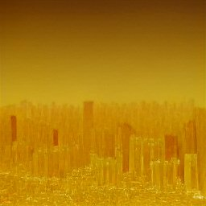
Figure 18: დომინიუმ კოსმიკუს
მოკლე შეჯამება
ექსპედიტორების ადგილმდებარეობა: ქალაქი დომინიუმი, „ასცენსიონი“. განადგურებულია „კორდის ორდენის“ ორი მეთაური, მორგანი და ადრიანე.
ფრეამ გადაშალა სტალმორის ბოლო წიგნი, „იმპაქტი“ და ნახა, რომ პირველ გვერდზე მიკერებული იყო რაღაც სხვა ხელნაწერი. იხ. ნაპოვნი ტექსტი ქვევით.
კოსმიკუსში ასასვლელად საჭირო იყო დირიჟაბლი. მანუჩარმა გადაწყვიტა, თავისი დაქირავებული დირიჟაბლი ამოეყვანა და უბრანა იქ დატოვებულ პერსონალს, დაიძარითო. გაფრთხილებას არ მოუსმინა, ფულს დაპირდა და ისინიც დათანხმდნენ. საბოლოოდ უნებართვოდ შემოსვლის გამო ქალაქის დაცვამ შეტევა განახორციელა და ჩამოაგდო, რამაც ეკიპაჟი სრულად ამოწყვიტა.
ექსპედიტორებმა მოახერხეს დომინიუმ კოსმიკუსამდე მისვლა ტელეპორტერის გააქტიურებით. თავიდან ფრეა და მანუჩარი ავიდნენ, მერე ნორვემირმა, გაიგო რა, რომ ქალაქში გაცი შემოიჭრა თავისი არმიით, ზულფუც თან წამოიყვანა.
დომინიუმ კოსმიკუსში ამოგვყვა 9 ტარანი, 2 ტრებუშეტი, 2 ბალისტა და 2 კატაპულტა. მთავარი სამიზნე იყო ცენტრალური კომიტეტის შენობა.
გრძელი და ძნელი ბრძოლის შედეგად გავიმარჯვეთ. ზულფუ ჯერ თეთრ მგლად იქცა, მერე პეგასუსი გამოიძახა და ნორვემირი და მანუჩარი სასახლის ყველა ზედა ადგილას, აივანზე, გადასხა. ჯარი ნელ-ნელა წინ მოიწევდა და გალავანს უშენდა ქვებს. თავმჯდომარე ისმაელი მეთაურობდა თავდაცვას, რომელიც შუა ბრძოლაში იქცა დიდ რკინის ქმნილებად. მას ვერ ვნებდა ვერც ხმალი, ვერც კატაპულტიდან ნასროლი ქვა. ნორვემირმა გადააგდო აივნიდან პირდაპირ გუდრონში, რამაც იგი საკმაო ხანი გამოთიშა ბრძოლიდან. გაცმა შემდგომ იქაურობა უზარმაზარი ყინულის სეტყვით დაბომბა, რათა გართულებოდათ ინჟინრებს მისვლა. რაღაც დროის მერე, საყვირის ხმასთან ერთად, გამოჩნდა მტრის დირიჟაბლი, რომელმაც ნორვემირს მიუსია 5 ქრომი. ამან იგი იძულებული გახადა, გაქცეულიყო. მეთაურმა ჩაანგრია სასახლის ორი სართული და ისე დაეწია ნორვემირს, მაგრამ ამან იქ ყველა იქ მყოფი ქრომი გაანადგურა. ამასობაში ტრებუშეტმა გაანადგურა გალავანი. 30 ქვეითი შევარდა და შუბებით აკუწა მეთაური, რითიც ბრძოლა დამთავრდა.
ნაპოვნი ტექსტი
„მიწათ განრიდება, ეს არის კაცობრიობის შეცდომის შედეგი. უსულოს გაცოცხლების მცდელობა ადამიანს ძვირად დაუჯდა. ნერონ, უსულო შავი ლითონი, როგორც ქვევრი, და სიცოცხლე, ანუ სული, როგორც ღვინო — ეს იყო ალქემიკოს სტალმორის გეგმა, და მას მხარს უჭერდა ღვთისხელის ერთ-ერთი წევრი, სახელად კორველ. ამ უკანასკნელმა მოახერხა სტალმეერის ბოლო იმპერატორის, იკარდი რაზორის, მოკვდინება, მაგრამ ეჭვი, რომ ის არაა მკვდარი, კვლავაც არსებობს. კორველმა, შენიღბულმა როგორც იკარდი, განაგრძო სტალმეერის იმპერატორობა, ვითომც არაფერი, და განავრცო იკარდის ცრუ ვინაობა, ვითომდა მას შვილი არა ჰყავდა, და ააშენა რკინისაგან ნერონ. სტალმეერის დედაქალაქში, გეგმისამებრ, ცენტრალური პალასის კატაკომბებში, 1299 წლის 24 დეკემბერს „გაძევებულმა“ სტალმორმა ნერონ რაზორის, როგორც პირველი ლიმინური გოლემის, აღზევება დაიწყო. მას ერთ ფიალაში ჰქონდა ახლად გარდაცვლილი შეიდის სული, ხოლო მეორეში ვინმე ნორვემირის სისხლით სავსე ჭიქა. ეს უკანასკნელი სტალმორის აღზრდილი ყმაწვილი იყო, ვინც დარკმეიერის დასნეულებული ქუჩებიდან გაიტაცა ოდესღაც. გეგმა იყო, რომ შეიდის სული ჯასის ქვის წონასწორობის ენერგიით გაერთიანებულიყო ლეგენდა ნილკორისის სულთან, რომელიც კორველს ჯასის ქვასთან ერთად წამოეღო ღვთისხელიდან, მაგრამ ერთი მეორეს უკუაგდებდა. სტალმორის აზრით, წმინდა სიკეთე და წმინდა ბოროტება ერთმანეთს გააწონასწორებდა, და აქ ის შეცდა. ნილკორისის ფიალის გვერდზე გადადებით, სტალმორმა ნერონში ოდნავი რაოდენობით ნორვემირის სისხლში შეიყვანა, რომ შემოეტანა სულ მცირე ნაცრისფერი, დაბნეულობა, და კვლავ ეცადა ნილკორისის სულის შეშვება ნერონის სუდარაში. ეს იყო სტალმორის მეორე შეცდომა, და ამან უკვე გამოიწვია უძლიერესი აფეთქება, იმდენად მძლავრი, რომ ანტივესის მთლიანი ცენტრი მიწასთან გასწორდა, ხოლო ეპიცენტრის თავზე აღმოცენდა გიგანტური და საზარელი, სისხლივით წითელი ქარბორბალა, ეს დასასრულის მხოლოდ დასაწყისი იყო, რადგან მსგავსი აფეთქებები სტალმეერის ყველა იმპერიულ ქალაქში მოხდა. აქ დაეცა იმპერია, და მის გულში გაჩნდა შავბნელი უმბრა. სტალმორმა აფეთქებას თავი ტელეპორტით დააღწია. ვარაუდია, რომ ნილკორისის სული რატომღაც ბოლომდე არ იყო ნეიტრალიზებული და საკუთარი ნებით მოქმედება შეეძლო, რადგან ის ამჟამად ნორვემირის სხეულშია. ასევე აღმოჩნდა, რომ ჯასის ქვას აკლდა სულ მხოლოდ ერთი მცირე ნატეხი, და მისი სფერულობაც დარღვეული იყო.
— გაან, 1301“
სესია 13 (კვირა, 2 ოქტომბერი, 2022) - მიწათ განრიდება III - იმპაქტი
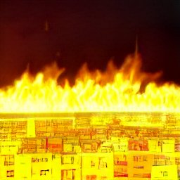
Figure 19: ცეცხლის ალში გახვეული ანტივესი